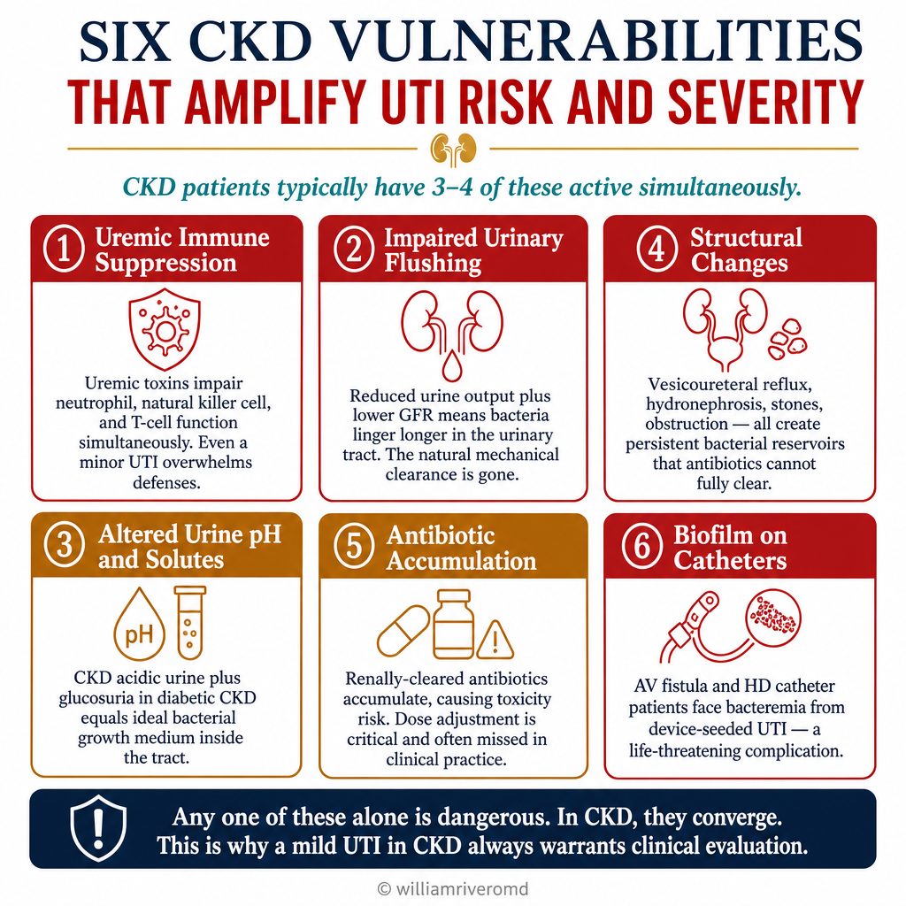
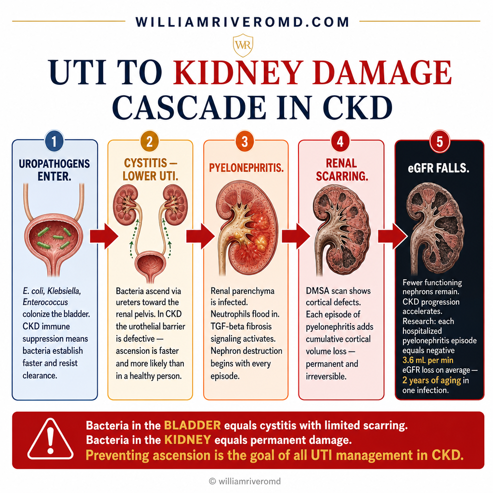
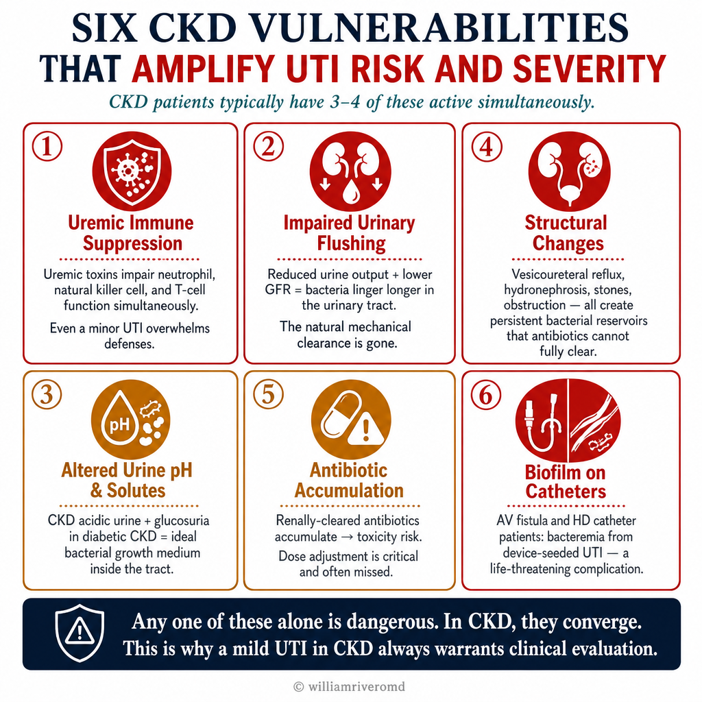
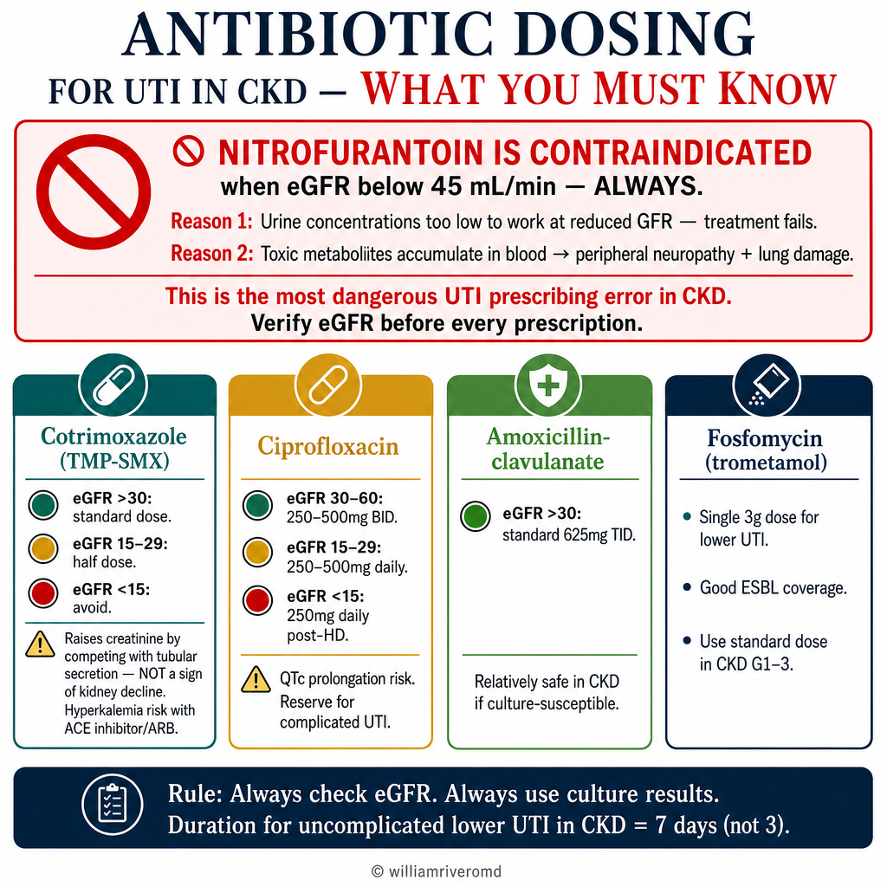
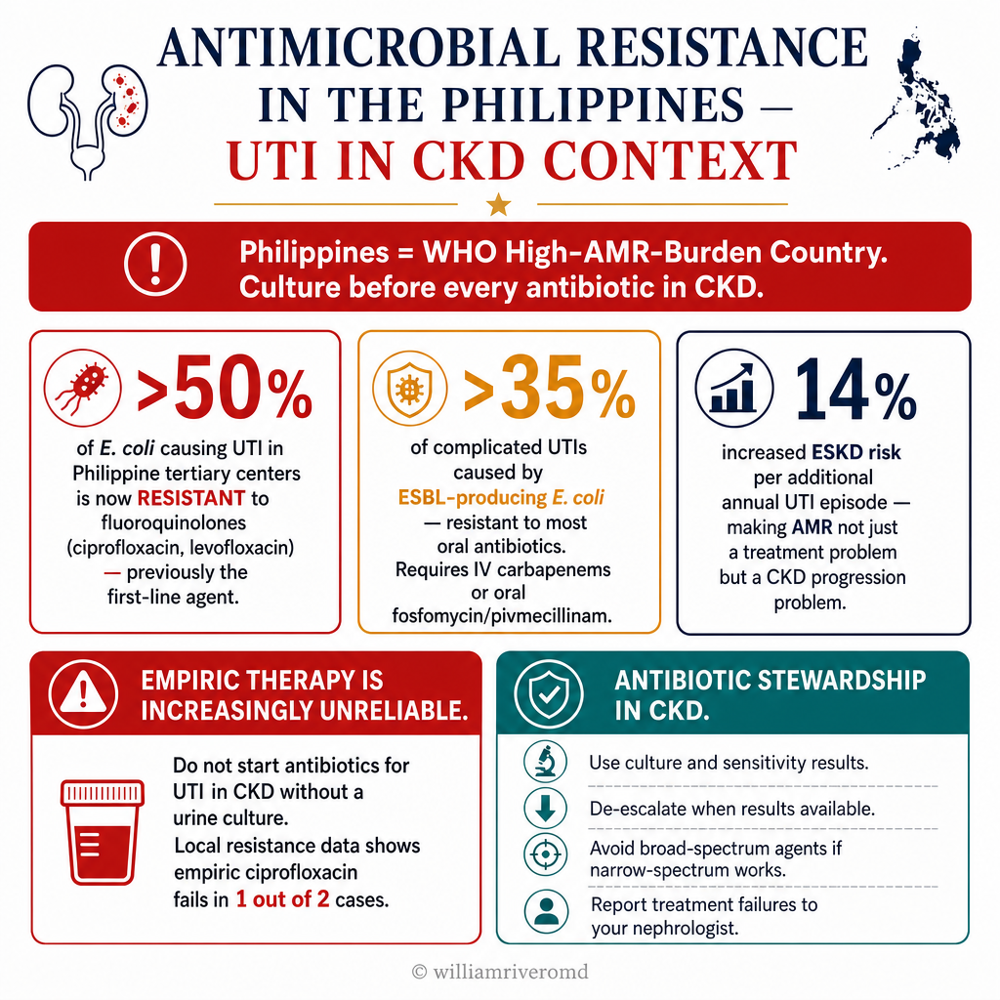
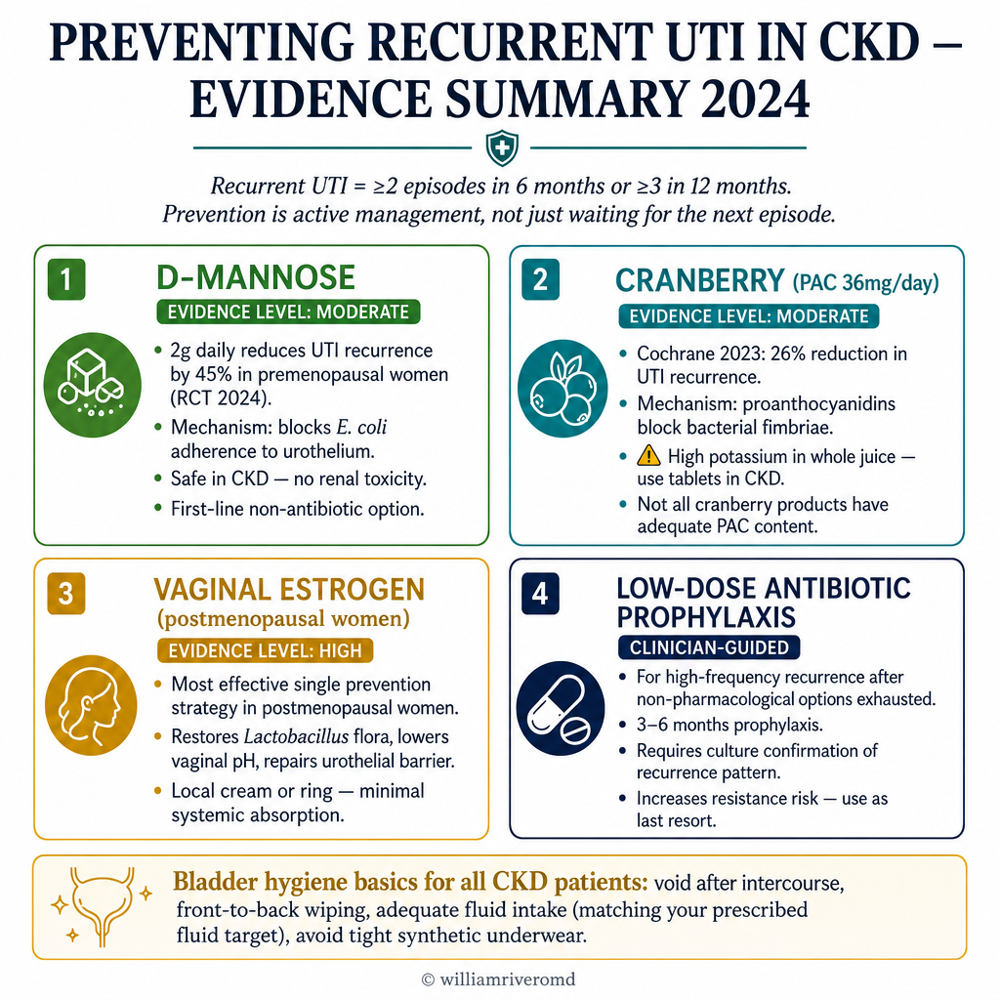
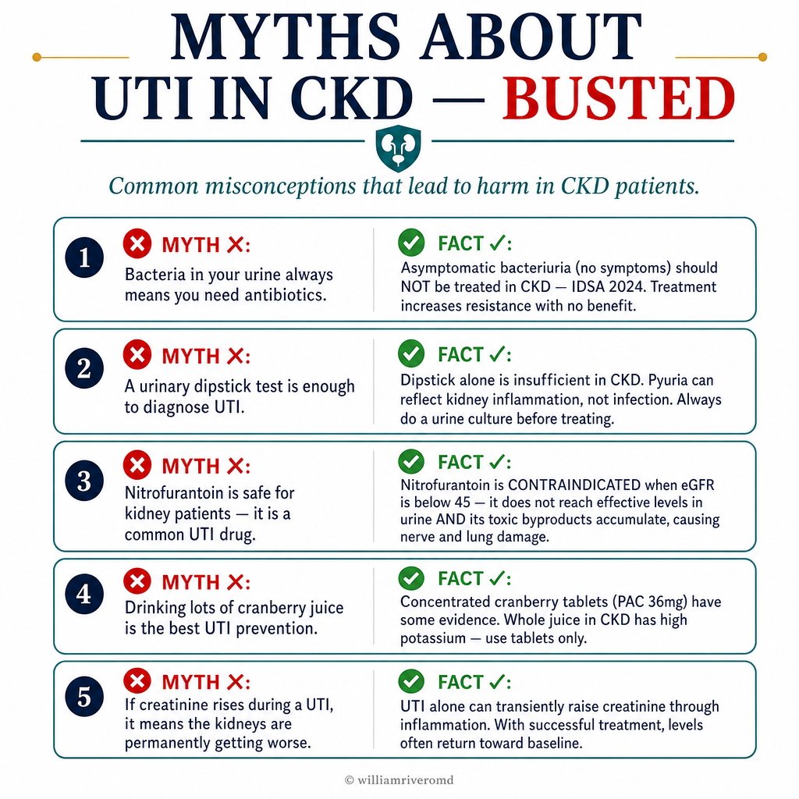

Why UTI Is Fundamentally Different in CKD PatientsBakit Pundamental na Naiiba ang UTI sa mga Pasyenteng may CKDNgano Pundamental nga Lahi ang UTI sa mga Pasyente nga adunay CKDBakit Pundamental na Naiiba ing UTI sa deng Pasyenteng may CKD
A healthy person gets a UTI. They take 3 days of antibiotics. It resolves. End of story. For a CKD patient, this narrative is dangerously incomplete. CKD creates six simultaneous vulnerabilities that transform a simple lower urinary tract infection into a potential driver of permanent kidney damage, sepsis, and accelerated progression to ESKD. Understanding why UTI hits harder in CKD is the foundation of every prevention and treatment decision in this guide.Ang isang malusog na tao ay nagkakaroon ng UTI. Umiinom sila ng 3 araw ng antibiotic. Gumagaling ito. Tapos na ang kwento. Para sa isang pasyenteng may CKD, ang salaysay na ito ay mapanganib na hindi kumpleto. Ang CKD ay lumilikha ng anim na sabay-sabay na kahinaan na nagbabago ng isang simpleng impeksyon sa ibabang bahagi ng urinary tract sa isang potensyal na driver ng permanenteng pinsala sa bato, sepsis, at pinabilis na pagsulong patungo sa ESKD. Ang pag-unawa kung bakit mas matindi ang epekto ng UTI sa CKD ang pundasyon ng bawat desisyon sa pag-iwas at paggamot sa gabay na ito.Ang usa ka malusog nga tawo nagkasakit ug UTI. Nag-inom sila ug 3 ka adlaw nga antibiotic. Naayo kini. Tapos na ang istorya. Para sa usa ka pasyente nga adunay CKD, kini nga salaysay delikadong dili kumpleto. Ang CKD nagbuhat ug unom ka dungan nga kahuyang nga nagbag-o sa usa ka simpleng impeksyon sa ubos nga bahagi sa urinary tract ngadto sa potensyal nga driver sa permanenteng kadaot sa kidney, sepsis, ug pinabilis nga pagsulong padulong sa ESKD. Ang pagsabot kung ngano mas grabe ang epekto sa UTI sa CKD ang pundasyon sa matag desisyon sa pagpugong ug paggamot niining giya.Ing metung a malusog na tao ya nagkakaroon ning UTI. Umiinom sila ning 3 aldo ning antibiotic. Gumagaling ini. Tapos na ing kwento. Para king metung a pasyenteng may CKD, ing salaysay na ini ya mapanganib na ali kumpleto. Ing CKD ya lumilikha ning anim na sabay-sabay na kahinaan na nagbabago ning metung a simpleng impeksyon sa ibabang bahagi ning urinary tract sa metung a potensyal na driver ning permanenteng pinsala sa batu, sepsis, at pinabilis na pagsulong patungo sa ESKD. Ing pag-unawa nung bakit mas matindi ing epekto ning UTI sa CKD ing pundasyon ning bawat desisyon sa pag-iwas at paggamut sa gabay na ini.

The convergence of multiple vulnerabilities explains why CKD patients are 3–4× more likely to develop complicated UTI, pyelonephritis, and urosepsis compared to the general population — and why a "mild" UTI in a CKD patient always warrants clinical evaluation.Ang pagsasama ng maraming kahinaan ay nagpapaliwanag kung bakit ang mga pasyenteng may CKD ay 3–4× mas malamang na magkaroon ng kumplikadong UTI, pyelonephritis, at urosepsis kumpara sa pangkalahatang populasyon — at kung bakit ang isang "banayad" na UTI sa isang pasyenteng may CKD ay palaging nangangailangan ng klinikal na pagsusuri.Ang pagtupong sa daghang kahuyang nagpasabot kung ngano ang mga pasyente nga adunay CKD 3–4× mas lagmit nga magpalambo ug komplikado nga UTI, pyelonephritis, ug urosepsis kumpara sa kinatibuk-an nga populasyon — ug kung ngano ang usa ka "gaan" nga UTI sa usa ka pasyente nga adunay CKD pirmi nagkinahanglan ug klinikal nga pagsusi.Ing pagsasama ning dacal a kahinaan ya nagpapaliwanag nung bakit deng pasyenteng may CKD ya 3–4× mas malamang na magkaroon ning kumplikadong UTI, pyelonephritis, at urosepsis kumpara king pangkalahatang populasyon — at nung bakit ing metung a "banayad" na UTI sa metung a pasyenteng may CKD ya papirming nangangailangan ning klinikal na pagsusuri.
Who is at highest risk — Philippines contextSino ang nasa pinakamataas na panganib — konteksto ng PilipinasKinsa ang labing taas nga risgo — konteksto sa PilipinasSino ing nasa pinakamatas a panganib — konteksto ning Pilipinas
- Women with CKD Stage 3–5Mga kababaihang may CKD Stage 3–5Mga babaye nga adunay CKD Stage 3–5Deng kababaihang may CKD Stage 3–5 — anatomical proximity of urethra to rectum + shorter urethra + declining immunityanatomical na pagkalapít ng urethra sa rectum + mas maikling urethra + bumababa na immunityanatomical nga pagkaduol sa urethra sa rectum + mas mubo nga urethra + nagkubos nga immunityanatomical na pagkalapít ning urethra sa rectum + mas maikling urethra + bumababa na immunity
- Diabetic kidney disease (DKD) patientsMga pasyenteng may diabetic kidney disease (DKD)Mga pasyente nga adunay diabetic kidney disease (DKD)Deng pasyenteng may diabetic kidney disease (DKD) — glucosuria provides bacterial growth medium; autonomic neuropathy impairs bladder emptying (neurogenic bladder)ang glucosuria ay nagbibigay ng medium para sa paglaki ng bakterya; ang autonomic neuropathy ay pumipigil sa pag-alis ng ihi sa pantog (neurogenic bladder)ang glucosuria naghatag ug medium alang sa pagtubo sa bakterya; ang autonomic neuropathy nagsamok sa pag-puga sa pantog (neurogenic bladder)ang glucosuria ya nagbibigay ning medium para king paglaki ning bakterya; ing autonomic neuropathy ya pumipigil sa pag-alis ning ihi sa pantog (neurogenic bladder)
- Dialysis patientsMga pasyenteng nasa dialysisMga pasyente sa dialysisDeng pasyenteng nasa dialysis — uremic immunosuppression + catheter-related risksuremic immunosuppression + mga panganib na may kaugnayan sa catheteruremic immunosuppression + mga risgo nga may kalabtan sa catheteruremic immunosuppression + deng panganib na may kaugnayan sa catheter
- Kidney transplant recipientsMga tatanggap ng kidney transplantMga nakadawat ug kidney transplantDeng tatanggap nining kidney transplant — immunosuppression makes UTI the most common post-transplant infection (45–75% incidence in first year)ang immunosuppression ay ginagawang UTI ang pinaka-karaniwang impeksyon pagkatapos ng transplant (45–75% na insidente sa unang taon)ang immunosuppression nagbuhat sa UTI nga pinaka-kasagarang impeksyon human sa transplant (45–75% nga insidente sa unang tuig)ang immunosuppression ya ginagawang UTI ing pinaka-karaniwang impeksyon kapabanuan ning transplant (45–75% na insidente sa unaning banua)
- CKD patients with stones or vesicoureteral refluxMga pasyenteng may CKD na may bato o vesicoureteral refluxMga pasyente nga adunay CKD nga may bato o vesicoureteral refluxDeng pasyenteng may CKD na may batu o vesicoureteral reflux — structural abnormalities create persistent bacterial reservoirsang mga istruktura na abnormalidad ay lumilikha ng patuloy na bacterial reservoirang mga istruktura nga abnormalidad nagbuhat ug padayon nga bacterial reservoirdeng istruktura na abnormalidad ya lumilikha ning patuloy na bacterial reservoir
- Men >60 with BPH + CKDMga lalaking >60 taong gulang na may BPH + CKDMga lalaki >60 anyos nga adunay BPH + CKDDeng lalaking >60 banuag gulang na may BPH + CKD — prostatic obstruction causes post-void residual → stagnant urine → infectionang prostatic obstruction ay nagdudulot ng post-void residual → natigil na ihi → impeksyonang prostatic obstruction nagdulot ug post-void residual → natunog nga ihi → impeksyonang prostatic obstruction ya nagdudulot ning post-void residual → natigil na ihi → impeksyon
Defining recurrent UTI — when to escalatePagtukoy sa paulit-ulit na UTI — kailan mag-escalatePagtino sa balik-balik nga UTI — kanus-a mag-escalatePagtukoy sa paulit-ulit na UTI — kailan mag-escalate
Recurrent UTIPaulit-ulit na UTIBalik-balik nga UTIPaulit-ulit na UTI is defined as ≥2 episodes in 6 months or ≥3 episodes in 12 months (EAU 2024). In CKD patients, this threshold should trigger nephrology evaluation — not just another antibiotic course. Recurrent UTI in CKD may indicate:ay tinukoy bilang ≥2 na episode sa 6 buwan o ≥3 na episode sa 12 buwan (EAU 2024). Sa mga pasyenteng may CKD, ang threshold na ito ay dapat mag-trigger ng pagsusuri sa nephrology — hindi lang isa pang kurso ng antibiotic. Ang paulit-ulit na UTI sa CKD ay maaaring magpahiwatig ng:gihubit ingon ≥2 ka episode sa 6 ka buwan o ≥3 ka episode sa 12 ka buwan (EAU 2024). Sa mga pasyente nga adunay CKD, kini nga threshold kinahanglan mag-trigger sa pagsusi sa nephrology — dili lang usa pa ka kurso sa antibiotic. Ang balik-balik nga UTI sa CKD mahimong magpakita sa:ay tinukoy bilang ≥2 na episode sa 6 bulan o ≥3 na episode sa 12 bulan (EAU 2024). Sa deng pasyenteng may CKD, ing threshold na ini ya dapat mag-trigger ning pagsusuri sa nephrology — ali lang isa pang kurso ning antibiotic. Ing paulit-ulit na UTI sa CKD ya maaaring magpahiwatig ng:
- Unresolved structural abnormality (stones, reflux, obstruction)Hindi nalutas na istruktura na abnormalidad (bato, reflux, obstruction)Wala masulbi nga istruktura nga abnormalidad (bato, reflux, obstruction)Ali nalutas na istruktura na abnormalidad (batu, reflux, obstruction)
- Persistent bacterial biofilm — treatment-resistant strainsPatuloy na bacterial biofilm — mga strain na lumalaban sa paggamotPadayon nga bacterial biofilm — mga strain nga nagbatok sa paggamotPatuloy na bacterial biofilm — deng strain na lumalaban sa paggamut
- Unrecognized renal TB (sterile pyuria pattern)Hindi nakilalang renal TB (pattern ng sterile pyuria)Wala naila nga renal TB (pattern sa sterile pyuria)Ali nakilalang renal TB (pattern ning sterile pyuria)
- Inadequate treatment of prior episodes (wrong antibiotic, wrong dose, wrong duration)Hindi sapat na paggamot ng nakaraang mga episode (maling antibiotic, maling dosis, maling tagal)Dili igo nga paggamot sa nauna nga mga episode (sayop nga antibiotic, sayop nga dosis, sayop nga tagal)Ali sapat na paggamut ning nakaradeng episode (maling antibiotic, maling dosis, maling tagal)
- Post-void residual from BPH or neurogenic bladderPost-void residual mula sa BPH o neurogenic bladderPost-void residual gikan sa BPH o neurogenic bladderPost-void residual mula sa BPH o neurogenic bladder
How Recurrent UTI Drives CKD ProgressionPaano Pinabibilis ng Paulit-ulit na UTI ang Pagsulong ng CKDUnsaon sa Balik-balik nga UTI Pagpaabante sa CKDPaano Pinabibilis ning Paulit-ulit na UTI ing Pagsulong ning CKD
The question every nephrologist and CKD patient should ask: does each UTI leave a scar? The answer, supported by growing evidence, is increasingly: yes — particularly when infections reach the upper urinary tract, when treatment is delayed, or when infections recur frequently without resolution of the underlying cause.Ang tanong na dapat itanong ng bawat nefrologo at pasyenteng may CKD: ang bawat UTI ba ay nag-iiwan ng peklat? Ang sagot, na sinusuportahan ng lumalagong ebidensya, ay lalong nagiging: oo — lalo na kapag ang mga impeksyon ay umaabot sa itaas na bahagi ng urinary tract, kapag naantala ang paggamot, o kapag ang mga impeksyon ay paulit-ulit na nang walang resolusyon ng pinagbabatayan na sanhi.Ang pangutana nga kinahanglan itanong sa matag nephrologist ug pasyente nga adunay CKD: ang matag UTI ba nagbilin ug piklat? Ang tubag, nga gisuportahan sa nagtubo nga ebidensya, nagkalaon na: oo — labi na kung ang mga impeksyon moabot sa ibabaw nga bahagi sa urinary tract, kung nalangan ang paggamot, o kung ang mga impeksyon balik-balik nga walay resolusyon sa nag-uusab nga hinungdan.Ing tanong na dapat itanong ning bawat nefrologo at pasyenteng may CKD: ing bawat UTI ba ya nag-iiwan ning peklat? Ing sagot, na sinusuportahan ning lumalagong ebidensya, ya lalong nagiging: oo — lalo na nung deng impeksyon ya umaabot sa itaas na bahagi ning urinary tract, nung naantala ing paggamut, o nung deng impeksyon ya paulit-ulit na nang alang resolusyon ning pinagbabatayan na sanhi.

The key anatomical step is ascension — bacteria that remain in the bladder cause cystitis but limited scarring. Once bacteria ascend to the renal pelvis and parenchyma, the inflammatory response begins nephron destruction. In CKD, this ascension is faster and the inflammatory response more damaging due to the defective urothelial barrier and impaired immune containment.Ang pangunahing anatomical na hakbang ay ang pag-akyat — ang mga bakterya na nananatili sa pantog ay nagdudulot ng cystitis ngunit limitadong peklat. Kapag ang mga bakterya ay umakyat sa renal pelvis at parenchyma, ang inflammatory response ay nagsisimula ng pagkasira ng nephron. Sa CKD, ang pag-akyat na ito ay mas mabilis at ang inflammatory response ay mas mapanira dahil sa may depektong urothelial barrier at may kapansanan na immune containment.Ang panguna nga anatomical nga lakang mao ang pag-akyat — ang mga bakterya nga nagpabilin sa pantog nagdulot ug cystitis apan limitadong piklat. Sa higayon nga ang mga bakterya moakyat sa renal pelvis ug parenchyma, ang inflammatory response nagsugod sa paglaglag sa nephron. Sa CKD, kining pag-akyat mas dali ug ang inflammatory response mas makadaot tungod sa may depekto nga urothelial barrier ug may kapansanan nga immune containment.Ing pangunahing anatomical na hakbang ya ing pag-akyat — deng bakterya na nananatili sa pantog ya nagdudulot ning cystitis ngarud limitadong peklat. Nung deng bakterya ya umakyat sa renal pelvis at parenchyma, ing inflammatory response ya nagsisimula ning pagkasira ning nephron. Sa CKD, ing pag-akyat na ini ya mas mabilis at ing inflammatory response ya mas mapanira dahil king may depektong urothelial barrier at may kapansanan na immune containment.
Latest research — UTI as a progression driver (2022–2025)Pinakabagong pananaliksik — UTI bilang driver ng pagsulong (2022–2025)Labing bag-ong pananaliksik — UTI ingon driver sa pagsulong (2022–2025)Pinakabagong pananaliksik — UTI bilang driver ning pagsulong (2022–2025)
Diagnosing UTI in CKD — Traps and PitfallsPag-diagnose ng UTI sa CKD — Mga Bitag at HamonPag-diagnose sa UTI sa CKD — Mga Bitag ug HamonPag-diagnose ning UTI sa CKD — Deng Bitag at Hamon

Asymptomatic bacteriuria in CKD — do NOT treat (with one exception)Asymptomatic bacteriuria sa CKD — HUWAG gamutin (may isang pagbubukod)Asymptomatic bacteriuria sa CKD — AYAW gamuton (adunay usa ka eksepsyon)Asymptomatic bacteriuria sa CKD — HUWAG gamutin (may metung a pagbubukod)
Asymptomatic bacteriuria (ABU) — bacteria in urine without symptoms — is present in 10–15% of CKD patients and up to 40–80% of catheterized dialysis patients. Multiple RCTs confirm that treating ABU in non-pregnant CKD patients does not improve outcomes and increases antibiotic resistance. The IDSA 2019 guidelines (reaffirmed 2024) explicitly recommend against screening for or treating ABU in CKD patients who are not pregnant and not undergoing urological procedures. This is one of the most frequently violated guidelines in clinical practice.Ang asymptomatic bacteriuria (ABU) — mga bakterya sa ihi nang walang sintomas — ay naroroon sa 10–15% ng mga pasyenteng may CKD at hanggang 40–80% ng mga pasyenteng nasa dialysis na may catheter. Maraming RCT ang nagkukumpirma na ang paggamot ng ABU sa mga pasyenteng may CKD na hindi buntis ay hindi nagpapabuti ng mga resulta at nagdadagdag ng antibiotic resistance. Ang mga alituntunin ng IDSA 2019 (muling pinagtibay noong 2024) ay hayagang nagrereklamo laban sa pag-screen o paggamot ng ABU sa mga pasyenteng may CKD na hindi buntis at hindi sumasailalim sa mga urological na pamamaraan. Ito ay isa sa mga pinaka-madalas na nilabag na alituntunin sa klinikal na pagsasagawa.Ang asymptomatic bacteriuria (ABU) — mga bakterya sa ihi nga walay sintomas — anaa sa 10–15% sa mga pasyente nga adunay CKD ug hangtod sa 40–80% sa mga pasyente sa dialysis nga adunay catheter. Daghang mga RCT nagkumpirma nga ang paggamot sa ABU sa mga pasyente nga adunay CKD nga dili mabdos dili nagpabuti sa mga resulta ug nagdugang sa antibiotic resistance. Ang mga guideline sa IDSA 2019 (gipamatuod pag-usab sa 2024) hayag nga nagrekomendar batok sa pag-screen o paggamot sa ABU sa mga pasyente nga adunay CKD nga dili mabdos ug dili moagi sa urological nga mga pamamaraan. Kini usa sa mga guideline nga pinaka-kanunay nga gilabwan sa klinikal nga praktis.Ing asymptomatic bacteriuria (ABU) — deng bakterya sa ihi nang alang sintomas — ya naroroon sa 10–15% ning deng pasyenteng may CKD at anggang 40–80% ning deng pasyenteng nasa dialysis na may catheter. Maraming RCT ing nagkukumpirma na ing paggamut ning ABU sa deng pasyenteng may CKD na ali buntis ya ali nagpapabuti ning deng resulta at nagdadagdag ning antibiotic resistance. Deng alituntunin ning IDSA 2019 (muling pinagtibay noong 2024) ya hayagang nagrereklamo laban sa pag-screen o paggamut ning ABU sa deng pasyenteng may CKD na ali buntis at ali sumasailalim sa deng urological na pamamaraan. Ini ya isa king deng pinaka-madalas na nilabag na alituntunin king klinikal na pagsasagawa.
Why diagnosis is harder in CKDBakit mas mahirap ang diagnosis sa CKDNgano mas lisod ang diagnosis sa CKDBakit mas mahirap ing diagnosis sa CKD
- Pyuria is baseline in many CKD patientsAng pyuria ay baseline sa maraming pasyenteng may CKDAng pyuria baseline sa daghang pasyente nga adunay CKDIng pyuria ya baseline sa dacal a pasyenteng may CKD — white cells in urine may reflect glomerular inflammation, not infection. A positive leukocyte esterase strip alone is insufficient for diagnosis.ang mga puting selula sa ihi ay maaaring magpakita ng glomerular inflammation, hindi impeksyon. Ang isang positibong leukocyte esterase strip lamang ay hindi sapat para sa diagnosis.ang mga puting selula sa ihi mahimong magpakita sa glomerular inflammation, dili impeksyon. Ang usa ka positibong leukocyte esterase strip lamang dili igo alang sa diagnosis.deng puting selula sa ihi ya maaaring magpakita ning glomerular inflammation, ali impeksyon. Ing metung a positibong leukocyte esterase strip lamang ya ali sapat para king diagnosis.
- Reduced fever responseNabawasang tugon sa lagnatNagkubos nga tubag sa hilanatNabawasang tugon sa lagnat — uremia blunts the febrile response; a CKD patient with pyelonephritis may present with only low-grade or no feverang uremia ay pumipigil sa febrile response; ang isang pasyenteng may CKD na may pyelonephritis ay maaaring magpakita ng mababang antas o walang lagnat lamangang uremia nagpugngan sa febrile response; ang usa ka pasyente nga adunay CKD nga adunay pyelonephritis mahimong magpakita lamang ug ubos nga antas o walay hilanatang uremia ya pumipigil sa febrile response; ing metung a pasyenteng may CKD na may pyelonephritis ya maaaring magpakita ning mababang antas o alang lagnat lamang
- Dysuria may be absentMaaaring wala ang dysuriaMahimong wala ang dysuriaMaaaring ala ing dysuria — autonomic neuropathy in DKD impairs bladder sensationang autonomic neuropathy sa DKD ay pumipigil sa pakiramdam ng pantogang autonomic neuropathy sa DKD nagsamok sa pagsensya sa pantogang autonomic neuropathy sa DKD ya pumipigil sa pakiramdam ning pantog
- Creatinine spikes with any systemic illnessAng creatinine ay tumaas sa anumang sistematikong sakitAng creatinine motaas sa bisan unsang sistematikong sakitIng creatinine ya tumaas sa anumang sistematikoning sakit — a UTI-triggered creatinine rise may be misattributed to CKD progression rather than reversible inflammatory nephropathyang pagtaas ng creatinine na sanhi ng UTI ay maaaring maling maiugnay sa pagsulong ng CKD kaysa sa nababaligtad na inflammatory nephropathyang pagtaas sa creatinine nga gisanhi sa UTI mahimong sayop nga ipahinungod sa pagsulong sa CKD kaysa sa mabaligtad nga inflammatory nephropathyang pagtaas ning creatinine na sanhi ning UTI ya maaaring maling maiugnay sa pagsulong ning CKD kaysa sa nababaligtad na inflammatory nephropathy
- Sterile pyuriaSterile pyuriaSterile pyuriaSterile pyuria — persistently high WBC with negative culture → think renal TB first (see TB and Kidney Disease guide)patuloy na mataas na WBC na may negatibong kultura → isipin muna ang renal TB (tingnan ang gabay sa TB at Sakit sa Bato)padayon nga taas nga WBC nga adunay negatibong kultura → hunahunaon una ang renal TB (tan-awa ang giya sa TB ug Sakit sa Kidney)patuloy na matas a WBC na may negatibong kultura → isipin muna ing renal TB (tingnan ing gabay sa TB at Sakit sa Batu)
Minimum diagnostic standard for UTI in CKDPinakamababang pamantayan ng diagnosis para sa UTI sa CKDPinakaubos nga pamantayan sa diagnosis alang sa UTI sa CKDPinakamababang pamantayan ning diagnosis para king UTI sa CKD
- Urine culture is mandatoryAng kultura ng ihi ay sapilitanAng kultura sa ihi sapilitanIng kultura ning ihi ya sapilitan — never treat presumptively in CKD without a urine culture. Empiric therapy is started while awaiting results, but culture guides definitive treatment.huwag kailanman gamutin nang may pagpapalagay sa CKD nang walang kultura ng ihi. Ang empiric therapy ay sisimulan habang hinihintay ang mga resulta, ngunit ang kultura ay gumagabay sa tiyak na paggamot.ayaw gayud gamuton nga may paghunahuna sa CKD nga walay kultura sa ihi. Ang empiric therapy sugdon habang gihulatan ang mga resulta, apan ang kultura naggiya sa tino nga paggamot.eka kailanman gamutin nang may pagpapalagay sa CKD nang alang kultura ning ihi. Ing empiric therapy ya sisimulan habang hinihintay deng resulta, ngarud ing kultura ya gumagabay sa tiyak na paggamut.
- Clean-catch midstream specimenClean-catch midstream specimenClean-catch midstream specimenClean-catch midstream specimen — properly collected to avoid contamination. Catheter specimen in dialysis patients if midstream unreliable.maayos na nakolekta para maiwasan ang kontaminasyon. Specimen ng catheter sa mga pasyenteng nasa dialysis kung ang midstream ay hindi mapagkakatiwalaan.husto nga nakolekta aron malikayan ang kontaminasyon. Specimen sa catheter sa mga pasyente sa dialysis kung ang midstream dili masaligan.maayos na nakolekta para maiwasan ing kontaminasyon. Specimen ning catheter sa deng pasyenteng nasa dialysis nung ing midstream ya ali mapagkakatialaan.
- Significant bacteriuria threshold:Threshold ng makabuluhang bacteriuria:Threshold sa makabuluhang bacteriuria:Threshold ning makabuluhang bacteriuria: ≥10⁵ CFU/mL for most pathogens; ≥10² CFU/mL for catheter specimens≥10⁵ CFU/mL para sa karamihan ng mga pathogen; ≥10² CFU/mL para sa mga specimen ng catheter≥10⁵ CFU/mL alang sa kadaghanan sa mga pathogen; ≥10² CFU/mL alang sa mga specimen sa catheter≥10⁵ CFU/mL para king karamihan ning deng pathogen; ≥10² CFU/mL para king deng specimen ning catheter
- Blood culturesKultura ng dugoKultura sa dugoKultura nining daya — mandatory in febrile CKD patients with suspected upper UTI or if HD/PD patient (bacteremia risk is high)sapilitan sa mga pasyenteng may CKD na may lagnat na pinaghihinalaang may upper UTI o kung HD/PD patient (mataas ang panganib ng bacteremia)sapilitan sa mga pasyente nga adunay CKD nga adunay hilanat nga gihunahunaang may upper UTI o kung HD/PD patient (taas ang risgo sa bacteremia)sapilitan sa deng pasyenteng may CKD na may lagnat na pinaghihinalaang may upper UTI o nung HD/PD patient (mataas ing panganib ning bacteremia)
- Renal imagingImaging ng batoImaging sa kidneyImaging nining batu — ultrasound if first UTI in a CKD patient, if poor response at 72 hours, or if anatomical abnormality suspected (hydronephrosis, stones, abscess)ultrasound kung ito ang unang UTI sa isang pasyenteng may CKD, kung masamang tugon sa 72 oras, o kung pinaghihinalaang may anatomical abnormality (hydronephrosis, bato, abscess)ultrasound kung kini ang unang UTI sa usa ka pasyente nga adunay CKD, kung pobre ang tubag sa 72 ka oras, o kung gihunahunaang may anatomical abnormality (hydronephrosis, bato, abscess)ultrasound nung ini ing unang UTI sa metung a pasyenteng may CKD, nung masamang tugon sa 72 oras, o nung pinaghihinalaang may anatomical abnormality (hydronephrosis, batu, abscess)
- DMSA scanDMSA scanDMSA scanDMSA scan — for recurrent pyelonephritis to quantify cumulative cortical scarringpara sa paulit-ulit na pyelonephritis upang masukat ang kumulatibong cortical scarringalang sa balik-balik nga pyelonephritis aron sukdon ang kumulatibong cortical scarringpara king paulit-ulit na pyelonephritis para masukat ing kumulatibong cortical scarring
Antibiotic Treatment in CKD — Dose Adjustment Is Non-NegotiableAntibiotic na Paggamot sa CKD — Hindi Mapag-uusapan ang Pag-aayos ng DosisAntibiotic nga Paggamot sa CKD — Dili Mapag-away ang Pag-adjust sa DosisAntibiotic na Paggamut sa CKD — Ali Mapag-uusapan ing Pag-aayos ning Dosis

Nearly all antibiotics used for UTI are renally cleared. In CKD, standard doses can lead to toxic accumulation and organ damage — or, paradoxically, inadequate drug levels at the site of infection if dosing guidance is misapplied. Both scenarios worsen outcomes.Halos lahat ng antibiotic na ginagamit para sa UTI ay nililinis ng bato. Sa CKD, ang mga karaniwang dosis ay maaaring humantong sa nakakalason na akumulasyon at pinsala sa organ — o, kabaligtaran, hindi sapat na antas ng gamot sa lugar ng impeksyon kung ang gabay sa dosis ay mali ang paglalapat. Parehong sitwasyon ay nagpapalala ng mga resulta.Halos tanan nga mga antibiotic nga gamiton alang sa UTI gilimpyohan sa kidney. Sa CKD, ang mga karaniwang dosis mahimong magdala sa nakaracun nga akumulasyon ug kadaot sa organ — o, kabaliktaran, dili igo nga antas sa gamot sa lugar sa impeksyon kung ang gabay sa dosis sayop ang paggamit. Pareho nga sitwasyon nagpagrabe sa mga resulta.Halos lahat ning antibiotic na ginagamit para king UTI ya nililinis nining batu. Sa CKD, deng karaniwang dosis ya maaaring humantong sa nakakalason na akumulasyon at pinsala sa organ — o, kabaligtaran, ali sapat na antas nining gamut sa lugar ning impeksyon nung ing gabay sa dosis ya mali ing paglalapat. Parehong sitwasyon ya nagpapalala ning deng resulta.
Nitrofurantoin is contraindicated in CKD Stage 3b+ (eGFR <45) — alwaysAng nitrofurantoin ay kontraindikado sa CKD Stage 3b+ (eGFR <45) — palagiAng nitrofurantoin kontraindikado sa CKD Stage 3b+ (eGFR <45) — pirmiIng nitrofurantoin ya kontraindikado sa CKD Stage 3b+ (eGFR <45) — papirmi
Nitrofurantoin (Macrobid, Macrodantin) is commonly prescribed in the Philippines for uncomplicated UTI. It is contraindicated when eGFR <45 mL/min for two reasons: (1) therapeutic concentrations are not achieved in urine at low GFR — treatment fails; (2) its toxic metabolites accumulate in serum — causing peripheral neuropathy and pulmonary toxicity. This is one of the most dangerous prescribing errors in CKD and occurs frequently in general practice. Always verify eGFR before dispensing nitrofurantoin.Ang nitrofurantoin (Macrobid, Macrodantin) ay karaniwang inireseta sa Pilipinas para sa simpleng UTI. Ito ay kontraindikado kapag ang eGFR <45 mL/min sa dalawang dahilan: (1) hindi nakakamit ang mga therapeutic na konsentrasyon sa ihi sa mababang GFR — nabibigo ang paggamot; (2) ang mga nakakalason na metabolite nito ay nag-iipon sa serum — nagdudulot ng peripheral neuropathy at pulmonary toxicity. Ito ay isa sa mga pinaka-mapanganib na pagkakamali sa pagreseta sa CKD at madalas na nangyayari sa pangkalahatang pagsasagawa. Palaging i-verify ang eGFR bago ibigay ang nitrofurantoin.Ang nitrofurantoin (Macrobid, Macrodantin) kasagarang gireseta sa Pilipinas alang sa simpleng UTI. Kontraindikado kini kung ang eGFR <45 mL/min sa duha ka dahilan: (1) dili makab-ot ang mga therapeutic nga konsentrasyon sa ihi sa ubos nga GFR — napakyas ang paggamot; (2) ang iyang mga nakaracun nga metabolite nagtipon sa serum — nagdulot ug peripheral neuropathy ug pulmonary toxicity. Kini usa sa mga pinaka-delikadong sayop sa pagreseta sa CKD ug kanunay mahitabo sa kinatibuk-ang praktis. Pirmi i-verify ang eGFR sa wala pa ibigay ang nitrofurantoin.Ing nitrofurantoin (Macrobid, Macrodantin) ya karaniwang inireseta king Pilipinas para king simpleng UTI. Ini ya kontraindikado nung ing eGFR <45 mL/min sa dalawang dahilan: (1) ali nakakamit deng therapeutic na konsentrasyon sa ihi sa mababang GFR — nabibigo ing paggamut; (2) deng nakakalason na metabolite nini ya nag-iipon sa serum — nagdudulot ning peripheral neuropathy at pulmonary toxicity. Ini ya isa king deng pinaka-mapanganib na pagkakamali sa pagreseta sa CKD at madalas na nangyayari sa pangkalahatang pagsasagawa. Papirming i-verify ing eGFR bago ibigay ing nitrofurantoin.
| Antibiotic | Standard adult dose | eGFR 30–60 | eGFR 15–29 | eGFR <15 / Dialysis | Notes for CKD |
|---|---|---|---|---|---|
| Cotrimoxazole (TMP-SMX) | 160/800mg BID × 3–7d | No adjustment | Half dose or avoid | Avoid | Raises serum creatinine by competing with tubular secretion — does NOT indicate kidney function decline. Hyperkalemia risk with ACE inhibitor/ARB. Preferred for E. coli if susceptible in Stage 1–3a. |
| Ciprofloxacin | 500mg BID × 7d (upper), 3d (lower) | 250–500mg BID | 250–500mg OD–BID | 250mg OD (post-HD dose on HD days) | QTc prolongation — avoid with other QT-prolonging drugs common in CKD (antiarrhythmics). Tendinopathy risk increased in CKD. Reserve for complicated UTI/pyelonephritis. |
| Amoxicillin-clavulanate | 625mg TID × 7d | No adjustment | 625mg BID | 625mg OD or avoid | Generally well-tolerated. GI side effects common. Clavulanic acid component causes most GI issues. Take with food to reduce GI symptoms. |
| Cephalexin (Keflex) | 500mg QID × 7d | 500mg TID–BID | 500mg BID–OD | 250–500mg OD (post-HD) | First-generation cephalosporin. Good oral bioavailability. Generally well-tolerated in CKD. Preferred for uncomplicated UTI in Stage 3–4 if susceptible. |
| Cefuroxime | 500mg BID × 7d | No adjustment | 250mg BID | 250mg OD | Second-generation cephalosporin. Better Gram-negative coverage than cephalexin. Good option for uncomplicated pyelonephritis in CKD if oral therapy appropriate. |
| Fosfomycin | 3g single dose (uncomplicated) | Single dose, no adjustment | Use with caution | Avoid | Increasingly important for ESBL-producing E. coli (extended-spectrum beta-lactamase strains). Single dose improves compliance. Not effective for Pseudomonas or Klebsiella. EAU 2024 recommends for uncomplicated UTI with ESBL. |
| Nitrofurantoin | 100mg BID × 5d | Use with caution eGFR 45–60 | Contraindicated | Contraindicated | Do not use if eGFR <45. Both therapeutic failure AND toxicity occur. See alert above. Common prescribing error in general practice. |
| Meropenem / Ertapenem | 1g q8h IV (meropenem) | Reduce dose/extend interval | Significant reduction | Post-HD dosing only — consult pharmacist | Reserved for ESBL/MDR-resistant UTI requiring IV therapy. Hospital setting. Nephrology + infectious disease co-management. Do not use empirically. |
Duration of therapy in CKD — do not shorten below minimumTagal ng therapy sa CKD — huwag paikliin ng mas mababa sa minimumTagal sa therapy sa CKD — ayaw paiklion ubos sa minimumTagal ning therapy sa CKD — eka paikliin ning mas mababa sa minimum
- Uncomplicated lower UTI (cystitis), women, CKD Stage 1–3a:Simpleng lower UTI (cystitis), kababaihan, CKD Stage 1–3a:Simpleng lower UTI (cystitis), mga babaye, CKD Stage 1–3a:Simpleng lower UTI (cystitis), kababaihan, CKD Stage 1–3a: 5–7 days (not the standard 3 days — CKD patients have higher recurrence with short courses)5–7 araw (hindi ang karaniwang 3 araw — ang mga pasyenteng may CKD ay may mas mataas na paulit-ulit na impeksyon sa maikling kurso)5–7 ka adlaw (dili ang karaniwang 3 ka adlaw — ang mga pasyente nga adunay CKD adunay mas taas nga balik-balik nga impeksyon sa mubo nga kurso)5–7 aldo (ali ing karaniwang 3 aldo — deng pasyenteng may CKD ya may mas matas a paulit-ulit na impeksyon sa maikling kurso)
- Complicated UTI (men, CKD Stage 3b+, structural abnormality):Kumplikadong UTI (lalaki, CKD Stage 3b+, istruktura na abnormalidad):Komplikado nga UTI (lalaki, CKD Stage 3b+, istruktura nga abnormalidad):Kumplikadong UTI (lalaki, CKD Stage 3b+, istruktura na abnormalidad): 10–14 days10–14 araw10–14 ka adlaw10–14 aldo
- Acute pyelonephritis, CKD any stage:Acute pyelonephritis, CKD sa anumang stage:Acute pyelonephritis, CKD sa bisan unsang stage:Acute pyelonephritis, CKD sa anumang stage: 14 days minimum; 21 days if slow clinical response14 araw na minimum; 21 araw kung mabagal ang klinikal na tugon14 ka adlaw nga minimum; 21 ka adlaw kung hinay ang klinikal nga tubag14 aldo na minimum; 21 aldo nung mabagal ing klinikal na tugon
- Catheter-associated UTI in dialysis:Catheter-associated UTI sa dialysis:Catheter-associated UTI sa dialysis:Catheter-associated UTI king dialysis: 14 days; catheter removal preferred if possible14 araw; mas ginusto ang pag-alis ng catheter kung posible14 ka adlaw; mas gipili ang pagtangtang sa catheter kung mahimo14 aldo; mas ginusto ing pag-alis ning catheter nung posible
- Post-transplant UTI:Post-transplant UTI:Post-transplant UTI:Post-transplant UTI: 14–21 days regardless of apparent severity — consult transplant nephrology14–21 araw anuman ang tila kalubhaan — kumonsulta sa transplant nephrology14–21 ka adlaw bisan unsa ang tila grabe — kumonsulta sa transplant nephrology14–21 aldo anuman ing tila kalubhaan — kumonsulta sa transplant nephrology
- Test of cure cultureTest of cure cultureTest of cure cultureTest of cure culture — mandatory in CKD after completing therapy for upper UTI; obtain at 5–7 days post-treatmentsapilitan sa CKD pagkatapos makumpleto ang therapy para sa upper UTI; kumuha sa 5–7 araw pagkatapos ng paggamotsapilitan sa CKD human makompleto ang therapy alang sa upper UTI; kuhaon sa 5–7 ka adlaw human sa paggamotsapilitan sa CKD kapabanuan makumpleto ing therapy para king upper UTI; kumuha sa 5–7 aldo kapabanuan ning paggamut
Antimicrobial Resistance in Philippine UTI PathogensAntimicrobial Resistance sa mga Pathogen ng UTI sa PilipinasAntimicrobial Resistance sa mga Pathogen sa UTI sa PilipinasAntimicrobial Resistance sa deng Pathogen ning UTI king Pilipinas

The Philippines is classified by the WHO as a high-AMR-burden country. The proportion of E. coli causing UTI that is resistant to fluoroquinolones (ciprofloxacin, levofloxacin) — previously first-line agents — now exceeds 50% in many Philippine tertiary centers. ESBL-producing E. coli (resistant to most oral antibiotics) causes more than 35% of complicated UTIs. For CKD patients who already face dosing constraints, this resistance landscape means that empiric therapy is increasingly likely to fail without culture guidance.Ang Pilipinas ay inuri ng WHO bilang isang bansang may mataas na pasanin ng AMR. Ang proporsyon ng E. coli na nagdudulot ng UTI na lumalaban sa fluoroquinolones (ciprofloxacin, levofloxacin) — dating mga first-line na ahente — ay ngayon ay lumagpas na sa 50% sa maraming tertiary center sa Pilipinas. Ang ESBL-producing E. coli (lumalaban sa karamihan ng mga oral na antibiotic) ay nagdudulot ng higit sa 35% ng mga kumplikadong UTI. Para sa mga pasyenteng may CKD na naghaharap na ng mga limitasyon sa dosis, ang landscape ng resistensyang ito ay nangangahulugang ang empiric therapy ay lalong malamang na mabigo nang walang gabay ng kultura.Ang Pilipinas gi-klase sa WHO ingon usa ka nasod nga adunay taas nga pasanin sa AMR. Ang proporsyon sa E. coli nga nagdulot sa UTI nga nagbatok sa fluoroquinolones (ciprofloxacin, levofloxacin) — kanhi mga first-line nga ahente — karon milabaw na sa 50% sa daghang tertiary center sa Pilipinas. Ang ESBL-producing E. coli (nagbatok sa kadaghanan sa mga oral nga antibiotic) nagdulot ug labaw sa 35% sa mga komplikadong UTI. Alang sa mga pasyente nga adunay CKD nga nag-atubang na sa mga limitasyon sa dosis, kining landscape sa resistensya nagpasabot nga ang empiric therapy nagkalaon nga mapakyas nga walay gabay sa kultura.Ing Pilipinas ya inuri ning WHO bilang metung a bansang may matas a pasanin ning AMR. Ing proporsyon ning E. coli na nagdudulot ning UTI na lumalaban sa fluoroquinolones (ciprofloxacin, levofloxacin) — dating deng first-line na ahente — ya ngayon ya lumagpas na sa 50% sa dacal a tertiary center king Pilipinas. Ing ESBL-producing E. coli (lumalaban sa karamihan ning deng oral na antibiotic) ya nagdudulot ning higit sa 35% ning deng kumplikadong UTI. Para king deng pasyenteng may CKD na naghaharap na ning deng limitasyon sa dosis, ing landscape ning resistensyang ini ya nangangahulugang ing empiric therapy ya lalong malamang na mabigo nang alang gabay ning kultura.
Philippine resistance patterns — 2024Mga pattern ng resistensya sa Pilipinas — 2024Mga pattern sa resistensya sa Pilipinas — 2024Deng pattern ning resistensya king Pilipinas — 2024
- E. coli UTI fluoroquinolone resistance:E. coli UTI fluoroquinolone resistance:E. coli UTI fluoroquinolone resistance:E. coli UTI fluoroquinolone resistance: 50–65% in tertiary hospitals50–65% sa mga tertiary hospital50–65% sa mga tertiary hospital50–65% sa deng tertiary hospital
- ESBL-producing E. coli:ESBL-producing E. coli:ESBL-producing E. coli:ESBL-producing E. coli: 35–45% of complicated UTI isolates35–45% ng mga isolate ng kumplikadong UTI35–45% sa mga isolate sa komplikadong UTI35–45% ning deng isolate ning kumplikadong UTI
- Klebsiella pneumoniae: 40% carbapenem-resistant in some ICU settings40% carbapenem-resistant sa ilang ICU setting40% carbapenem-resistant sa pipila ka ICU setting40% carbapenem-resistant sa ilang ICU setting
- Enterococcus faecium: increasing vancomycin resistance (VRE) — 8–12% in dialysis unitstumataas na vancomycin resistance (VRE) — 8–12% sa mga dialysis unitnagtubo nga vancomycin resistance (VRE) — 8–12% sa mga dialysis unittumatas a vancomycin resistance (VRE) — 8–12% sa deng dialysis unit
- Pseudomonas aeruginosa: multidrug-resistant strains in catheterized patientsmga multidrug-resistant strain sa mga pasyenteng may cathetermga multidrug-resistant strain sa mga pasyente nga adunay cathetermga multidrug-resistant strain sa deng pasyenteng may catheter
- Source: Philippine ARSP (Antimicrobial Resistance Surveillance Program) 2024Pinagmulan: Philippine ARSP (Antimicrobial Resistance Surveillance Program) 2024Tinubdan: Philippine ARSP (Antimicrobial Resistance Surveillance Program) 2024Pinagmulan: Philippine ARSP (Antimicrobial Resistance Surveillance Program) 2024
Why CKD patients are especially vulnerable to AMRBakit lalo na vulnerable ang mga pasyenteng may CKD sa AMRNgano labi na vulnerable ang mga pasyente nga adunay CKD sa AMRBakit lalo na vulnerable deng pasyenteng may CKD sa AMR
- Frequent antibiotic exposures from recurrent UTI → selective pressure for resistanceMadalas na pagkakalantad sa antibiotic mula sa paulit-ulit na UTI → selective pressure para sa resistensyaKanunay nga pagkaladlad sa antibiotic gikan sa balik-balik nga UTI → selective pressure alang sa resistensyaMadalas na pagkakalantad sa antibiotic mula sa paulit-ulit na UTI → selective pressure para king resistensya
- Hospital and dialysis center exposures → nosocomial resistant strainsPagkakalantad sa ospital at dialysis center → nosocomial resistant strainsPagkaladlad sa ospital ug dialysis center → nosocomial resistant strainsPagkakalantad king ospital at dialysis center → nosocomial resistant strains
- Dosing constraints in CKD → sub-therapeutic levels → resistance selectionMga limitasyon sa dosis sa CKD → sub-therapeutic na antas → pagpili ng resistensyaMga limitasyon sa dosis sa CKD → sub-therapeutic nga antas → pagpili sa resistensyaDeng limitasyon sa dosis sa CKD → sub-therapeutic na antas → pagpili ning resistensya
- Longer antibiotic courses → greater resistance pressureMas matagal na mga kurso ng antibiotic → mas malaking presyon ng resistensyaMas dugay nga mga kurso sa antibiotic → mas dako nga presyon sa resistensyaMas matagal na deng kurso ning antibiotic → mas malakining presyon ning resistensya
- Immunosuppression in transplant patients → more severe infections requiring broader antibioticsImmunosuppression sa mga pasyenteng may transplant → mas malubhang impeksyon na nangangailangan ng mas malawak na antibioticImmunosuppression sa mga pasyente nga adunay transplant → mas grabe nga impeksyon nga nanginahanglan ug mas lapad nga antibioticImmunosuppression sa deng pasyenteng may transplant → mas malubhang impeksyon na nangangailangan ning mas malawak na antibiotic
- Limited oral antibiotic options for ESBL UTI — many IV-only agents neededLimitadong mga oral na antibiotic na pagpipilian para sa ESBL UTI — maraming IV-only na ahente ang kailanganLimitado nga mga oral nga antibiotic nga pagpili alang sa ESBL UTI — daghang IV-only nga ahente ang kinahanglanLimitadong deng oral na antibiotic na pagpipilian para king ESBL UTI — dacal a IV-only na ahente ing kailangan
Always culture — never guess empirically in recurrent UTIPalaging mag-kultura — huwag kailanman hulaan nang empirically sa paulit-ulit na UTIPirmi mag-kultura — ayaw gayud hunahunaa nga empirically sa balik-balik nga UTIPapirming mag-kultura — eka kailanman hulaan nang empirically sa paulit-ulit na UTI
Given Philippine resistance rates, empiric ciprofloxacin or TMP-SMX has a >50% failure probability in many patients with recurrent UTI. Every UTI episode in a CKD patient should have a urine culture with sensitivity testing before starting antibiotics (or immediately upon starting empiric therapy). De-escalate to the narrowest effective antibiotic once sensitivity results return (typically 48–72 hours). This is not optional in CKD — it is antibiotic stewardship that directly protects the individual patient and the broader Philippine antibiotic resistance landscape.Sa mga rate ng resistensya sa Pilipinas, ang empiric ciprofloxacin o TMP-SMX ay may >50% na posibilidad ng kabiguan sa maraming pasyenteng may paulit-ulit na UTI. Ang bawat episode ng UTI sa isang pasyenteng may CKD ay dapat may kultura ng ihi na may sensitivity testing bago magsimula ng mga antibiotic (o agad sa pagsisimula ng empiric therapy). Mag-de-escalate sa pinaka-makitid na epektibong antibiotic kapag bumalik ang mga resulta ng sensitivity (karaniwang 48–72 oras). Hindi ito opsyonal sa CKD — ito ay antibiotic stewardship na direktang nagpoprotekta sa indibidwal na pasyente at sa mas malawak na landscape ng antibiotic resistance sa Pilipinas.Sa mga rate sa resistensya sa Pilipinas, ang empiric ciprofloxacin o TMP-SMX adunay >50% nga posibilidad sa pagkapakyas sa daghang pasyente nga adunay balik-balik nga UTI. Ang matag episode sa UTI sa usa ka pasyente nga adunay CKD kinahanglan adunay kultura sa ihi nga adunay sensitivity testing sa wala pa magsugod ug mga antibiotic (o dayon sa pagsugod sa empiric therapy). Mag-de-escalate sa pinaka-makitid nga epektibong antibiotic sa higayon nga mobalik ang mga resulta sa sensitivity (kasagarang 48–72 ka oras). Dili kini opsyonal sa CKD — kini antibiotic stewardship nga direktang nagpanalipod sa indibidwal nga pasyente ug sa mas lapad nga landscape sa antibiotic resistance sa Pilipinas.Sa deng rate ning resistensya king Pilipinas, ing empiric ciprofloxacin o TMP-SMX ya may >50% na posibilidad ning kabiguan sa dacal a pasyenteng may paulit-ulit na UTI. Ing bawat episode ning UTI sa metung a pasyenteng may CKD ya dapat may kultura ning ihi na may sensitivity testing bago magsimula ning deng antibiotic (o agad sa pagsisimula ning empiric therapy). Mag-de-escalate sa pinaka-makitid na epektibong antibiotic nung bumalik deng resulta ning sensitivity (karaniwang 48–72 oras). Ali ini opsyonal sa CKD — ini ya antibiotic stewardship na direktang nagpoprotekta sa indibidwal na pasyente at sa mas malawak na landscape ning antibiotic resistance king Pilipinas.
2015 Philippine CPG on Recurrent UTI — What Local Guidelines Recommend2015 Philippine CPG sa Paulit-ulit na UTI — Ano ang Inirerekomenda ng Lokal na Alituntunin2015 Philippine CPG sa Balik-balik nga UTI — Unsa ang Girekomenda sa Lokal nga Alituntunin2015 Philippine CPG sa Paulit-ulit na UTI — Nanu ing Inirerekomenda ning Lokal na Alituntunin
The Philippine CPG on UTI 2015 Update (Part 2) covers recurrent UTI and was developed by PSMID, PSN, POGS, PUA, and PAFP. The recommendations below align with or complement the international guidelines presented in the Prevention section, with local-context additions.Ang Philippine CPG on UTI 2015 Update (Part 2) ay sumasaklaw sa paulit-ulit na UTI at binuo ng PSMID, PSN, POGS, PUA, at PAFP. Ang mga rekomendasyon sa ibaba ay naaayon o nagdadagdag sa mga internasyonal na alituntunin na ipinakita sa seksyon ng Pag-iwas, na may mga karagdagan na may lokal na konteksto.Ang Philippine CPG on UTI 2015 Update (Part 2) nasakop ang balik-balik nga UTI ug gihimo sa PSMID, PSN, POGS, PUA, ug PAFP. Ang mga rekomendasyon sa ubos naayon o nagdugang sa internasyonal nga mga alituntunin nga gipakita sa seksyon sa Pagpugong, nga adunay mga karagdagan nga adunay lokal nga konteksto.Ing Philippine CPG on UTI 2015 Update (Part 2) ya sumasaklaw king paulit-ulit na UTI at binuo ning PSMID, PSN, POGS, PUA, at PAFP. Deng rekomendasyon king ibaba ya naaayon o nagdadagdag sa deng internasyonal na alituntunin na ipinakita sa seksyon ning Pag-iwas, na may deng karagdagan na may lokal na konteksto.
Antibiotic Prophylaxis Regimens (PSMID 2015 Table 4)Mga Regimen ng Antibiotic Prophylaxis (PSMID 2015 Table 4)Mga Regimen sa Antibiotic Prophylaxis (PSMID 2015 Table 4)Deng Regimen ning Antibiotic Prophylaxis (PSMID 2015 Table 4)
| AntibioticAntibioticAntibioticAntibiotic | Continuous (nightly)Tuluy-tuloy (gabi-gabi)Padayon (sa gabii)Tuluy-tuloy (gabi-gabi) | Post-coital (single dose)Post-coital (isang dosis)Post-coital (usa ka dosis)Post-coital (metung a dosis) | CKD NoteTala sa CKDTala sa CKDTala sa CKD |
|---|---|---|---|
| Nitrofurantoin | 50–100 mg at bedtime | 50–100 mg | ⚠️ Contraindicated eGFR <45 (Stage 3b+)⚠️ Kontraindikado eGFR <45 (Stage 3b+)⚠️ Kontraindikado eGFR <45 (Stage 3b+)⚠️ Kontraindikado eGFR <45 (Stage 3b+) |
| TMP-SMX (cotrimoxazole) | 40/200 mg at bedtime or 3×/week | 40/200 mg or 80/400 mg | Reduce dose for eGFR <30; avoid if eGFR <15Bawasan ang dosis para sa eGFR <30; iwasan kung eGFR <15Pagmenos sa dosis para sa eGFR <30; likayi kung eGFR <15Bawasan ing dosis para king eGFR <30; iwasan nung eGFR <15 |
| Ciprofloxacin | 125 mg at bedtime | 125 mg | Reduce dose in severe CKD; reserve — collateral damage riskBawasan ang dosis sa matinding CKD; ilaan — panganib ng collateral damagePagmenos sa dosis sa grabe nga CKD; ilhin — risgo sa collateral damageBawasan ing dosis sa grabe nga CKD; ilaan — panganib ning collateral damage |
| Norfloxacin | 200 mg at bedtime | 200 mg | Reserve; collateral damage riskIlaan; panganib ng collateral damageIlhin; risgo sa collateral damageIlaan; panganib ning collateral damage |
| Cefalexin (cephalexin) | 125–250 mg at bedtime | 125–250 mg | Safe in most CKD stages; preferred beta-lactam option in CKDLigtas sa karamihang yugto ng CKD; preferred na beta-lactam sa CKDLuwas sa kadaghanan nga yugto sa CKD; preferred nga beta-lactam sa CKDLigtas sa karamihang yugto ning CKD; preferred na beta-lactam sa CKD |
| Fosfomycin trometamol | 3 g every 10 days | — | Useful in CKD; no dose adjustment needed for mild–moderate CKD; not for severe renal impairmentKapaki-pakinabang sa CKD; walang pag-aayos ng dosis para sa banayad–katamtamang CKD; hindi para sa matinding impairment ng batoMapuslanon sa CKD; walay pag-adjust sa dosis para sa gaan–katungganay nga CKD; dili para sa grabe nga renal impairmentKapaki-pakinabang sa CKD; alang pag-aayos ning dosis para king banayad–katamtamang CKD; ali para king grabe nga renal impairment |
Immunoprophylaxis — PSMID 2015 Strong RecommendationImmunoprophylaxis — Malakas na Rekomendasyon ng PSMID 2015Immunoprophylaxis — Lig-on nga Rekomendasyon sa PSMID 2015Immunoprophylaxis — Malakas na Rekomendasyon ning PSMID 2015
Oral Immunostimulant (OM-89 / Uro-Vaxom) — Strong recommendation, Moderate quality (PSMID 2015)Oral Immunostimulant (OM-89 / Uro-Vaxom) — Malakas na rekomendasyon, Katamtamang kalidad (PSMID 2015)Oral Immunostimulant (OM-89 / Uro-Vaxom) — Lig-on nga rekomendasyon, Katungganay nga kalidad (PSMID 2015)Oral Immunostimulant (OM-89 / Uro-Vaxom) — Malakas na rekomendasyon, Katamtamang kalidad (PSMID 2015)
The 2015 Philippine CPG strongly recommends immunoprophylaxis using immune-active E. coli fractions (OM-89, trade name Uro-Vaxom) — an oral capsule taken once daily for 3 months — for prevention of recurrent UTI. OM-89 stimulates systemic and mucosal immunity against the four most common uropathogens without requiring antibiotics, making it particularly valuable in CKD patients where antibiotic options are limited by renal function. A longer/extended regimen (3 months daily, 3 months rest, 10 days/month × 3 months, then 3 months rest) may provide better long-term control (Weak recommendation, Moderate evidence). OM-89/Uro-Vaxom is available in the Philippines through hospital pharmacies and selected specialty pharmacies.Ang 2015 Philippine CPG ay malakas na inirerekomenda ang immunoprophylaxis gamit ang immune-active E. coli fractions (OM-89, trade name Uro-Vaxom) — isang oral na kapsula na ininom nang isang beses sa isang araw sa loob ng 3 buwan — para sa pag-iwas sa paulit-ulit na UTI. Ang OM-89 ay nagpapalakas ng sistematiko at mucosal immunity laban sa apat na pinaka-karaniwang uropathogen nang walang pangangailangan ng antibiotic, na ginagawa itong lalo na mahalaga sa mga pasyenteng may CKD kung saan ang mga opsyon ng antibiotic ay limitado ng tungkulin ng bato. Ang mas matagal/pinahabang regimen ay maaaring magbigay ng mas mahusay na pangmatagalang kontrol (Weak recommendation, Moderate evidence). Ang OM-89/Uro-Vaxom ay available sa Pilipinas sa pamamagitan ng mga parmasya ng ospital at mga piling espesyalidad na parmasya.Ang 2015 Philippine CPG lig-ong girekomenda ang immunoprophylaxis gamit ang immune-active E. coli fractions (OM-89, trade name Uro-Vaxom) — usa ka oral nga kapsula nga giinom og usa ka beses sa usa ka adlaw sulod sa 3 ka buwan — alang sa pagpugong sa balik-balik nga UTI. Ang OM-89 nagpalig-on sa sistematiko ug mucosal immunity batok sa upat ka pinaka-kasagarang uropathogen nga wala kinahanglan ang antibiotic, nga naghimo niini nga labi ka mahalaga sa mga pasyente nga adunay CKD diin ang mga opsyon sa antibiotic limitado sa pag-andar sa kidney. Ang mas dugay/pinahabang regimen mahimong maghatag ug mas maayong pangdugay nga kontrol (Weak recommendation, Moderate evidence). Ang OM-89/Uro-Vaxom available sa Pilipinas pinaagi sa mga parmasya sa ospital ug pipila nga espesyalidad nga parmasya.Ing 2015 Philippine CPG ya malakas na inirerekomenda ing immunoprophylaxis gamit ing immune-active E. coli fractions (OM-89, trade name Uro-Vaxom) — metung a oral na kapsula na ininom nang metung a beses sa metung a aldo sa loob ning 3 bulan — para king pag-iwas sa paulit-ulit na UTI. Ing OM-89 ya nagpapalakas ning sistematiko at mucosal immunity laban sa apat na pinaka-karaniwang uropathogen nang alang pangangailangan ning antibiotic, na ginagawa nini lalo na mahalaga sa deng pasyenteng may CKD nung ing deng opsyon ning antibiotic ya limitado ning tungkulin ning batu. Ing mas matagal/pinahabang regimen ya maaaring magbigay ning mas mahusay na pangmatagalang kontrol (Weak recommendation, Moderate evidence). Ing OM-89/Uro-Vaxom ya available king Pilipinas sa pamamagitan ning deng parmasya ning ospital at deng piling espesyalidad na parmasya.
Non-Antibiotic Strategies — PSMID 2015Mga Estratehiyang Hindi Antibiotic — PSMID 2015Mga Estratehiya nga Walay Antibiotic — PSMID 2015Deng Estratehiya na Ali Antibiotic — PSMID 2015
- Intravaginal estriol cream (once nightly × 2 weeks, then twice-weekly × ≥8 months) or estradiol-releasing vaginal ring (3 months) for postmenopausal women — Strong recommendation, Moderate evidence (PSMID 2015). Low-dose oral estrogen is NOT recommended (Strong, High).Intravaginal estriol cream (minsan sa gabi × 2 linggo, pagkatapos ay dalawang beses sa isang linggo × ≥8 buwan) o estradiol-releasing vaginal ring (3 buwan) para sa mga babaeng nakaraan na sa menopause — Strong recommendation, Moderate evidence (PSMID 2015). Hindi inirerekomenda ang mababang dosis ng oral estrogen (Strong, High).Intravaginal estriol cream (usa ka beses sa gabii × 2 semana, unya duha ka beses sa usa ka semana × ≥8 buwan) o estradiol-releasing vaginal ring (3 ka buwan) para sa mga postmenopausal nga babaye — Strong recommendation, Moderate evidence (PSMID 2015). Dili girekomenda ang ubos nga dosis nga oral estrogen (Strong, High).Intravaginal estriol cream (metung a beses sa gabi × 2 aldo-aldo, kapabanuan ya dalawang beses sa metung a aldo-aldo × ≥8 bulan) o estradiol-releasing vaginal ring (3 bulan) para king deng postmenopausal na babae — Strong recommendation, Moderate evidence (PSMID 2015). Ali inirerekomenda ing mababang dosis ning oral estrogen (Strong, High).
- Behavioral changes — post-coital urination, front-to-back wiping, liberal fluid intake, avoid tight underwear, avoid spermicide-containing contraceptives — Weak recommendation, Low evidence (PSMID 2015). Useful antibiotic-sparing measures.Pagbabago ng ugali — pag-ihi pagkatapos ng pakikipagtalik, paglinis mula harap patungong likod, maluwag na pag-inom ng likido, iwasan ang masikip na underwear, iwasan ang spermicide na mga contraceptives — Weak recommendation, Low evidence (PSMID 2015). Kapaki-pakinabang na mga hakbang na nagliligtas ng antibiotic.Pagbag-o sa batasan — pag-ihi human sa pakighilawas, paglimpyo gikan atubangan paingon sa likod, haw-as nga pag-inom ug likido, likayi ang pisok nga underwear, likayi ang spermicide-containing nga mga contraceptives — Weak recommendation, Low evidence (PSMID 2015). Mapuslanon nga mga lakang nga nagtipig sa antibiotic.Pagbabago ning ugali — pag-ihi kapabanuan ning pakikipagtalik, paglinis mula harap patungong likod, maluwag na pag-inom ning likido, iwasan ing masikip na underwear, iwasan deng spermicide-containing na contraceptives — Weak recommendation, Low evidence (PSMID 2015). Kapaki-pakinabang na deng hakbang na nagliligtas ning antibiotic.
- Cranberry products — Conditional recommendation, Moderate evidence (PSMID 2015). Recommended dose: 300 mL cranberry juice cocktail daily or 500 mg capsules containing 36 mg PACs twice daily. Evidence is inconsistent; use cranberry PAC capsules (not juice) in CKD to avoid potassium and sugar load. Among those on long-term antibiotic prophylaxis, cranberry 36 mg PAC capsules twice daily can be an option to reduce emergence of resistance.Mga produkto ng cranberry — Conditional recommendation, Moderate evidence (PSMID 2015). Inirekomendang dosis: 300 mL cranberry juice cocktail araw-araw o 500 mg capsules na naglalaman ng 36 mg PACs dalawang beses sa isang araw. Hindi pare-pareho ang ebidensya; gamitin ang cranberry PAC capsules (hindi juice) sa CKD upang maiwasan ang potassium at sugar load. Sa mga nasa pangmatagalang antibiotic prophylaxis, ang cranberry 36 mg PAC capsules dalawang beses sa isang araw ay maaaring maging opsyon upang mabawasan ang paglitaw ng resistensya.Mga produkto sa cranberry — Conditional recommendation, Moderate evidence (PSMID 2015). Girekomendang dosis: 300 mL cranberry juice cocktail matag adlaw o 500 mg capsules nga adunay 36 mg PACs duha ka beses sa usa ka adlaw. Dili konsistente ang ebidensya; gamiton ang cranberry PAC capsules (dili juice) sa CKD aron malikayan ang potassium ug sugar load. Sa mga naa sa dugay nga antibiotic prophylaxis, ang cranberry 36 mg PAC capsules duha ka beses sa usa ka adlaw mahimong opsyon aron mapamenos ang paglitaw sa resistensya.Deng produkto ning cranberry — Conditional recommendation, Moderate evidence (PSMID 2015). Inirekomendang dosis: 300 mL cranberry juice cocktail aldo-aldo o 500 mg capsules na naglalaman ning 36 mg PACs dalawang beses sa metung a aldo. Ali pare-pareho ing ebidensya; gamitin ing cranberry PAC capsules (ali juice) sa CKD upang maiwasan ing potassium at sugar load. Sa deng nasa pangmatagalang antibiotic prophylaxis, ing cranberry 36 mg PAC capsules dalawang beses sa metung a aldo ya maaaring maging opsyon upang mabawasan ing paglitaw ning resistensya.
- Antibiotic prophylaxis should only be initiated after behavioral modification has been attempted, in women for whom non-antibiotic strategies have not been effective, and who prefer prophylaxis — Strong recommendation, Moderate evidence (PSMID 2015). Duration 6–12 months then reassess.Antibiotic prophylaxis ay dapat simulan lamang pagkatapos na subukan ang pagbabago ng ugali, sa mga babaeng hindi epektibo ang mga estratehiyang hindi antibiotic, at naghahangad ng prophylaxis — Strong recommendation, Moderate evidence (PSMID 2015). Tagal na 6–12 buwan pagkatapos ay muling suriin.Antibiotic prophylaxis kinahanglan sugdon lamang human subayon ang pagbag-o sa batasan, sa mga babaye nga dili epektibo ang mga estratehiya nga walay antibiotic, ug gusto ang prophylaxis — Strong recommendation, Moderate evidence (PSMID 2015). Tagal 6–12 ka buwan unya susihon pag-usab.Antibiotic prophylaxis ya dapat simulan lamang kapabanuan ng subukan ing pagbabago ning ugali, sa deng babaeng ali epektibo deng estratehiyang ali antibiotic, at naghahangad ning prophylaxis — Strong recommendation, Moderate evidence (PSMID 2015). Tagal 6–12 bulan kapabanuan ya muling suriin.
Source: Task Force on UTI 2015, Philippine Practice Guidelines Group in Infectious Diseases. Urinary Tract Infections in Adults 2015 Update: Part 2 — Asymptomatic Bacteriuria in Adults, Recurrent UTI, and Complicated UTI. PSMID/PSN/POGS/PUA/PAFP. Clinical disclaimer: this guide presents educational summaries only — prescribing decisions require physician assessment.Pinagmulan: Task Force on UTI 2015, Philippine Practice Guidelines Group in Infectious Diseases. Urinary Tract Infections in Adults 2015 Update: Part 2. PSMID/PSN/POGS/PUA/PAFP. Disclaimer: educational summaries lamang — ang mga desisyon sa pagreseta ay nangangailangan ng pagsusuri ng doktor.Tinubdan: Task Force on UTI 2015, Philippine Practice Guidelines Group in Infectious Diseases. Urinary Tract Infections in Adults 2015 Update: Part 2. PSMID/PSN/POGS/PUA/PAFP. Disclaimer: educational summaries lamang — ang mga desisyon sa pagreseta nanginahanglan sa pagsusi sa doktor.Tinubdan: Task Force on UTI 2015, Philippine Practice Guidelines Group in Infectious Diseases. Urinary Tract Infections in Adults 2015 Update: Part 2. PSMID/PSN/POGS/PUA/PAFP. Disclaimer: educational summaries lamang — deng desisyon king pagreseta ya nangangailangan ning pagsusuri ning doktor.
Preventing Recurrent UTI in CKD — What Actually WorksPag-iwas sa Paulit-ulit na UTI sa CKD — Ano Talaga ang EpektiboPagpugong sa Balik-balik nga UTI sa CKD — Unsa Gayud ang EpektiboPag-iwas sa Paulit-ulit na UTI sa CKD — Ano Talaga ing Epektibo
Hydration — evidence confirmed, but CKD-specific caveatsHidrasyon — nakumpirma ang ebidensya, ngunit may mga caveat na partikular sa CKDHidrasyon — nakumpirma ang ebidensya, apan adunay mga caveat nga partikular sa CKDHidrasyon — nakumpirma ing ebidensya, ngarud may deng caveat na partikular sa CKD
Increased fluid intake reduces UTI recurrence in women with low baseline fluid intake. A 2018 JAMA Internal Medicine RCT confirmed that increasing daily water intake by 1.5L reduces UTI recurrence by 50% in women who previously drank <1.5L/day. In CKD: fluid restriction is often necessary (Stage 4–5, dialysis patients). The benefit of increased fluid intake must be balanced against fluid overload risk. Pre-dialysis CKD Stage 1–3 with residual urine output: generally safe to increase fluids to 2–2.5L/day. Dialysis patients with minimal residual urine: cannot safely increase fluid intake — other prevention strategies are prioritized.Ang pagtaas ng pag-inom ng likido ay nagbabawas ng paulit-ulit na UTI sa mga babaeng may mababang baseline na pag-inom ng likido. Ang isang 2018 JAMA Internal Medicine RCT ay nagkumpirma na ang pagdaragdag ng pang-araw-araw na pag-inom ng tubig ng 1.5L ay nagbabawas ng paulit-ulit na UTI ng 50% sa mga babaeng dati ay uminom ng <1.5L/araw. Sa CKD: ang limitasyon ng likido ay kadalasang kinakailangan (Stage 4–5, mga pasyenteng nasa dialysis). Ang benepisyo ng pagtaas ng pag-inom ng likido ay dapat balansehin laban sa panganib ng fluid overload. Pre-dialysis CKD Stage 1–3 na may natitirang dami ng ihi: karaniwang ligtas na dagdagan ang mga likido sa 2–2.5L/araw. Mga pasyenteng nasa dialysis na may kaunting natitirang ihi: hindi ligtas na dagdagan ang pag-inom ng likido — ang ibang mga estratehiya sa pag-iwas ang inuuna.Ang pagdugang sa pag-inom ug likido nagpamenos sa balik-balik nga UTI sa mga babaye nga adunay ubos nga baseline nga pag-inom ug likido. Ang usa ka 2018 JAMA Internal Medicine RCT nagkumpirma nga ang pagdugang sa adlaw-adlaw nga pag-inom ug tubig og 1.5L nagpamenos sa balik-balik nga UTI og 50% sa mga babaye nga dati nag-inom ug <1.5L/adlaw. Sa CKD: ang limitasyon sa likido kasagarang kinahanglan (Stage 4–5, mga pasyente sa dialysis). Ang benepisyo sa pagdugang sa pag-inom ug likido kinahanglan balansihin batok sa risgo sa fluid overload. Pre-dialysis CKD Stage 1–3 nga adunay nahibilin nga dami sa ihi: kasagarang luwas ang pagdugang sa mga likido ngadto sa 2–2.5L/adlaw. Mga pasyente sa dialysis nga adunay gamay nga nahibilin nga ihi: dili luwas ang pagdugang sa pag-inom ug likido — ang ubang mga estratehiya sa pagpugong ang inunahon.Ing pagtaas ning pag-inom ning likido ya nagbabawas ning paulit-ulit na UTI sa deng babaeng may mababang baseline na pag-inom ning likido. Ing metung a 2018 JAMA Internal Medicine RCT ya nagkumpirma na ing pagdaragdag ning pang-aldo-aldo na pag-inom nining danum ning 1.5L ya nagbabawas ning paulit-ulit na UTI ning 50% sa deng babaeng dati ya uminom ning <1.5L/aldo. Sa CKD: ing limitasyon ning likido ya kadalasang kinakailangan (Stage 4–5, deng pasyenteng nasa dialysis). Ing benepisyo ning pagtaas ning pag-inom ning likido ya dapat balansehin laban sa panganib ning fluid overload. Pre-dialysis CKD Stage 1–3 na may natitirang dami ning ihi: karaniwang ligtas na dagdagan deng likido sa 2–2.5L/aldo. Deng pasyenteng nasa dialysis na may kaunting natitirang ihi: ali ligtas na dagdagan ing pag-inom ning likido — ing ibdeng estratehiya sa pag-iwas ing inuuna.

The Microbiome Frontier — New Understanding of UTI in CKDAng Hangganan ng Microbiome — Bagong Pag-unawa sa UTI sa CKDAng Hangganan sa Microbiome — Bag-ong Pagsabot sa UTI sa CKDIng Hangganan ning Microbiome — Bagong Pag-unawa sa UTI sa CKD
The 2024 paradigm shift in UTI biology: the urinary tract is not sterile. The urobiome — the community of microorganisms living in healthy urine and bladder — plays an active protective role. CKD disrupts both the gut microbiome (dysbiosis) and the urobiome simultaneously, creating a permissive environment for uropathogen colonization. This explains why some CKD patients suffer relentless recurrent UTI despite technically adequate antibiotic treatment: they are repeatedly re-seeded from a disrupted gut and bladder microbiome that has no protective barrier left.Ang 2024 paradigm shift sa biology ng UTI: ang urinary tract ay hindi sterile. Ang urobiome — ang komunidad ng mga microorganism na naninirahan sa malusog na ihi at pantog — ay gumaganap ng aktibong protektibong papel. Ang CKD ay sabay-sabay na nagagambala sa gut microbiome (dysbiosis) at sa urobiome, lumilikha ng permissive na kapaligiran para sa kolonisasyon ng uropathogen. Ito ay nagpapaliwanag kung bakit ang ilang pasyenteng may CKD ay nagdurusa ng walang tigil na paulit-ulit na UTI sa kabila ng teknikal na sapat na paggamot ng antibiotic: sila ay paulit-ulit na nire-seed mula sa isang nabagsak na gut at bladder microbiome na wala nang protektibong hadlang.Ang 2024 paradigm shift sa biology sa UTI: ang urinary tract dili sterile. Ang urobiome — ang komunidad sa mga microorganism nga nagpuyo sa malusog nga ihi ug pantog — nagdula ug aktibong protektibong papel. Ang CKD dungan nga nagsamok sa gut microbiome (dysbiosis) ug sa urobiome, nagbuhat ug permissive nga kalikopan alang sa kolonisasyon sa uropathogen. Kini nagpasabot kung ngano ang pipila ka pasyente nga adunay CKD nagaantus sa walay hunong nga balik-balik nga UTI bisan pa sa teknikal nga igo nga paggamot sa antibiotic: sila kanunay re-seeded gikan sa nasamok nga gut ug bladder microbiome nga wala nay nahibilin nga protektibong babag.Ing 2024 paradigm shift sa biology ning UTI: ing urinary tract ya ali sterile. Ing urobiome — ing komunidad ning deng microorganism na naninirahan sa malusog na ihi at pantog — ya gumaganap ning aktibong protektibong papel. Ing CKD ya sabay-sabay na nagagambala sa gut microbiome (dysbiosis) at sa urobiome, lumilikha ning permissive na kapaligiran para king kolonisasyon ning uropathogen. Ini ya nagpapaliwanag nung bakit ing ilang pasyenteng may CKD ya nagdurusa ning alang tigil na paulit-ulit na UTI sa kabila ning teknikal na sapat na paggamut ning antibiotic: sila ya paulit-ulit na nire-seed mula sa metung a nabagsak na gut at bladder microbiome na ala nang protektibong hadlang.
The urobiome — what we now knowAng urobiome — ang alam na natin ngayonAng urobiome — ang nahibal-an na nato karonIng urobiome — ing alam na natin ngayon
The healthy bladder contains a diverse community of low-abundance bacteria — predominantly Lactobacillus (in women), Streptococcus, Gardnerella, and others — that colonize the urothelial surface and compete with uropathogens. CKD depletes this protective community through: uremic toxin effects on mucosal immunity, frequent antibiotic courses killing commensal bacteria, and urinary pH alterations that favor Gram-negative over Lactobacillus growth. 2024 urobiome sequencing studies show that women with recurrent UTI have 60–80% reduced Lactobacillus urobiome diversity compared to non-recurrent UTI controls — even between episodes.Ang malusog na pantog ay naglalaman ng iba't ibang komunidad ng mga bakterya na may mababang dami — pangunahin ang Lactobacillus (sa mga babae), Streptococcus, Gardnerella, at iba pa — na nagko-kolonisa sa ibabaw ng urothelial at nakikipagkumpetensya sa mga uropathogen. Ang CKD ay nagpapababa ng protektibong komunidad na ito sa pamamagitan ng: mga epekto ng uremic toxin sa mucosal immunity, madalas na mga kurso ng antibiotic na pumapatay ng commensal bacteria, at mga pagbabago ng pH ng ihi na nagtataguyod ng paglaki ng Gram-negative kaysa Lactobacillus. Ang mga pag-aaral ng urobiome sequencing noong 2024 ay nagpapakita na ang mga babaeng may paulit-ulit na UTI ay may 60–80% na nabawasang diversity ng Lactobacillus urobiome kumpara sa mga kontrol na walang paulit-ulit na UTI — kahit sa pagitan ng mga episode.Ang malusog nga pantog adunay lain-laing komunidad sa mga bakterya nga adunay ubos nga dami — labi na ang Lactobacillus (sa mga babaye), Streptococcus, Gardnerella, ug uban pa — nga nagkolonisa sa ibabaw sa urothelial ug nakig-kompetensya sa mga uropathogen. Ang CKD nagpaubos niining protektibong komunidad pinaagi sa: mga epekto sa uremic toxin sa mucosal immunity, kanunay nga mga kurso sa antibiotic nga nagpatay sa commensal bacteria, ug mga pagbabag-o sa pH sa ihi nga nagpabor sa pagtubo sa Gram-negative kaysa Lactobacillus. Ang mga pag-aaral sa urobiome sequencing sa 2024 nagpakita nga ang mga babaye nga adunay balik-balik nga UTI adunay 60–80% nga nagkubos nga diversity sa Lactobacillus urobiome kumpara sa mga kontrol nga walay balik-balik nga UTI — bisan sa taliwala sa mga episode.Ing malusog na pantog ya naglalaman ning iba't ibang komunidad ning deng bakterya na may mababang dami — pangunahin ing Lactobacillus (sa deng babae), Streptococcus, Gardnerella, at iba pa — na nagko-kolonisa king ibabaw ning urothelial at nakikipagkumpetensya sa deng uropathogen. Ing CKD ya nagpapababa ning protektibong komunidad na ini sa pamamagitan ng: deng epekto ning uremic toxin sa mucosal immunity, madalas na deng kurso ning antibiotic na pumapatay ning commensal bacteria, at deng pagbabago ning pH ning ihi na nagtataguyod ning paglaki ning Gram-negative kaysa Lactobacillus. Deng pag-aaral ning urobiome sequencing noong 2024 ya nagpapakita na deng babaeng may paulit-ulit na UTI ya may 60–80% na nabawasang diversity ning Lactobacillus urobiome kumpara king deng kontrol na alang paulit-ulit na UTI — kahit sa pagitan ning deng episode.
Gut-to-urinary tract translocationTranslocation mula sa bituka patungo sa urinary tractTranslocation gikan sa tinai padulong sa urinary tractTranslocation mula sa bituka patungo sa urinary tract
The dominant uropathogen in recurrent UTI — E. coli ST131 — originates from the patient's own gut. CKD gut dysbiosis (reduced Lactobacillus, increased Proteobacteria) allows E. coli to overgrow in the colon, then translocate via perineal skin to the urethra and bladder. This is why recurrent UTI driven by the same E. coli strain keeps returning despite adequate antibiotics — the gut reservoir is never treated. Targeting the gut microbiome is now the mechanistic rationale for probiotic prevention strategies.Ang dominant na uropathogen sa paulit-ulit na UTI — E. coli ST131 — nagmumula sa sariling bituka ng pasyente. Ang CKD gut dysbiosis (nabawasang Lactobacillus, nadagdagang Proteobacteria) ay nagpapahintulot sa E. coli na lumaki nang labis sa colon, pagkatapos ay mag-translocate sa pamamagitan ng balat ng perineum patungo sa urethra at pantog. Ito ang dahilan kung bakit ang paulit-ulit na UTI na pinapatakbo ng parehong strain ng E. coli ay patuloy na bumabalik sa kabila ng sapat na mga antibiotic — ang gut reservoir ay hindi kailanman ginagamot. Ang pag-target sa gut microbiome ay ngayon ang mechanistic na rationale para sa mga estratehiya sa pag-iwas gamit ang probiotic.Ang dominant nga uropathogen sa balik-balik nga UTI — E. coli ST131 — naggikan sa kaugalingong tinai sa pasyente. Ang CKD gut dysbiosis (nagkubos nga Lactobacillus, nagdugang nga Proteobacteria) nagpahintulot sa E. coli nga modaghan sa colon, unya mag-translocate pinaagi sa panit sa perineum padulong sa urethra ug pantog. Mao kini ang hinungdan kung ngano ang balik-balik nga UTI nga gipaandar sa mao mao nga strain sa E. coli padayon mobalik bisan pa sa igo nga mga antibiotic — ang gut reservoir dili gayud ginagamot. Ang pag-target sa gut microbiome karon ang mechanistic nga rationale alang sa mga estratehiya sa pagpugong gamit ang probiotic.Ing dominant na uropathogen sa paulit-ulit na UTI — E. coli ST131 — nagmumula sa sariling bituka ning pasyente. Ing CKD gut dysbiosis (nabawasang Lactobacillus, nadagdagang Proteobacteria) ya nagpapahintulot sa E. coli na lumaki nang labis sa colon, kapabanuan ya mag-translocate sa pamamagitan ning balat ning perineum patungo sa urethra at pantog. Ini ing dahilan nung bakit ing paulit-ulit na UTI na pinapatakbo ning parehong strain ning E. coli ya patuloy na bumabalik sa kabila ning sapat na deng antibiotic — ing gut reservoir ya ali kailanman ginagamut. Ing pag-target sa gut microbiome ya ngayon ing mechanistic na rationale para king deng estratehiya sa pag-iwas gamit ing probiotic.
Probiotic evidence — where the science stands in 2025Ebidensya ng probiotic — kung nasaan ang agham sa 2025Ebidensya sa probiotic — hain ang syensya sa 2025Ebidensya ning probiotic — nung nasaan ing agham sa 2025
UTI Myths — What Filipino Patients Are Told vs. What the Evidence ShowsMga Mito tungkol sa UTI — Ano ang Sinasabi sa mga Pilipinong Pasyente kumpara sa Sinasabi ng EbidensyaMga Mito bahin sa UTI — Unsa ang Gisultian sa mga Pilipinong Pasyente kumpara sa Gipakita sa EbidensyaDeng Mini tungkol sa UTI — Ano ing Sinasabi sa deng Pilipinong Pasyente kumpara king Sinasabi ning Ebidensya

Your Recurrent UTI Action Plan — CKD-Specific StepsAng Iyong Plano para sa Paulit-ulit na UTI — Mga Hakbang na Partikular sa CKDAng Imong Plano alang sa Balik-balik nga UTI — Mga Lakang nga Partikular sa CKDIng Iyung Plano para king Paulit-ulit na UTI — Deng Hakbang na Partikular sa CKD
Hygiene and behavioral preventionKalinisan at pag-iwas sa pamamagitan ng pag-uugaliKalinisan ug pagpugong pinaagi sa batasanKalinisan at pag-iwas sa pamamagitan ning pag-uugali
- Wipe front-to-back always — prevents fecal E. coli contaminationPalaging punasan mula harap patungo sa likod — pumipigil sa kontaminasyon ng E. coli mula sa dumiPirmi punas gikan atubangan padulong sa likod — nagpugong sa kontaminasyon sa E. coli gikan sa taePapirming punasan mula harap patungo sa likod — pumipigil sa kontaminasyon ning E. coli mula sa dumi
- Void after sexual intercourse — within 30 minutesUmihi pagkatapos ng pakikipagtalik — sa loob ng 30 minutoMag-ihi human sa pakighilawas — sulod sa 30 ka minutoUmihi kapabanuan ning pakikipagtalik — sa loob ning 30 minuto
- Void every 3–4 hours — never hold for extended periodsUmihi tuwing 3–4 oras — huwag kailanman pigilan sa matagal na panahonMag-ihi matag 3–4 ka oras — ayaw gayud pugnga sa dugay nga panahonUmihi tuwing 3–4 oras — eka kailanman pigilan sa matagal na panahon
- Post-void double voiding if you feel incomplete emptyingPost-void double voiding kung naramdaman mong hindi kumpleto ang pag-alis ng ihiPost-void double voiding kung mabatyagan nimo nga dili kompleto ang pag-pugaPost-void double voiding nung naramdaman mong ali kumpleto ing pag-alis ning ihi
- Avoid tight synthetic underwear — cotton, breathable fabric onlyIwasan ang mahigpit na synthetic na panloob — cotton, mapaghingang tela lamangLikayon ang pihok nga synthetic nga underwear — cotton, mapaginhawahang tela lamangIwasan ing mahigpit na synthetic na panloob — cotton, mapaghingang tela lamang
- Avoid vaginal douching — destroys protective LactobacillusIwasan ang vaginal douching — sumisira sa protektibong LactobacillusLikayon ang vaginal douching — naglaglag sa protektibong LactobacillusIwasan ing vaginal douching — sumisira sa protektibong Lactobacillus
- Change menstrual products frequentlyPalitan ang mga menstrual product nang madalasIlisan ang mga menstrual product ug kanunayPalitan deng menstrual product nang madalas
- Shower rather than bath — reduces perineal contamination exposureMag-shower kaysa maligo — nagpapababa ng pagkakalantad sa kontaminasyon ng perineumMag-shower kaysa maligo — nagpamenos sa pagkaladlad sa kontaminasyon sa perineumMag-shower kaysa maligo — nagpapababa ning pagkakalantad sa kontaminasyon ning perineum
Non-antibiotic prevention (try first)Pag-iwas na hindi antibiotic (subukan muna)Pagpugong nga walay antibiotic (sulayi una)Pag-iwas na ali antibiotic (subukan muna)
- D-mannose 2g/day — EAU Grade B evidenceEAU Grade B ebidensyaEAU Grade B ebidensyaEAU Grade B ebidensya
- Cranberry PAC extract 36mg/day — capsule only, not juicekapsula lamang, hindi juicekapsula lamang, dili juicekapsula lamang, ali juice
- Lactobacillus probioticLactobacillus probioticLactobacillus probioticLactobacillus probiotic — Renadyl (local) or Lactobacillus rhamnosus GR-1 + reuteri RC-14 (oral or vaginal)Renadyl (lokal) o Lactobacillus rhamnosus GR-1 + reuteri RC-14 (oral o vaginal)Renadyl (lokal) o Lactobacillus rhamnosus GR-1 + reuteri RC-14 (oral o vaginal)Renadyl (lokal) o Lactobacillus rhamnosus GR-1 + reuteri RC-14 (oral o vaginal)
- Topical vaginal estrogenTopical vaginal estrogenTopical vaginal estrogenTopical vaginal estrogen — postmenopausal women, EAU Grade Amga babaeng nakaraan na sa menopause, EAU Grade Amga babaye nga milabaw na sa menopause, EAU Grade Amga babaeng nakaraan na sa menopause, EAU Grade A
- Adequate hydrationSapat na hidrasyonSaktong hidrasyonSapat na hidrasyon — plain water 2–2.5L/day if CKD Stage 1–3 with normal fluid allowancepayak na tubig 2–2.5L/araw kung CKD Stage 1–3 na may normal na allowance ng likidolimpyo nga tubig 2–2.5L/adlaw kung CKD Stage 1–3 nga adunay normal nga allowance sa likidopayak na danum 2–2.5L/aldo nung CKD Stage 1–3 na may normal na allowance ning likido
- Methenamine hippurate — if urine pH <5.5 can be achievedkung maaaring makamit ang pH ng ihi na <5.5kung makab-ot ang pH sa ihi nga <5.5nung maaaring makamit ing pH ning ihi na <5.5
When to see your doctor immediatelyKailan agad pumunta sa doktorKanus-a dayon adtoon ang doktorKailan agad pumunta sa doktor
- Fever >38°C with urinary symptoms — possible pyelonephritisLagnat >38°C na may mga sintomas sa ihi — posibleng pyelonephritisHilanat >38°C nga adunay mga sintomas sa ihi — posibleng pyelonephritisLagnat >38°C na may deng sintomas sa ihi — posibleng pyelonephritis
- Flank or back pain with urinary symptomsSakit sa tagiliran o likod na may mga sintomas sa ihiKasakit sa kilid o likod nga adunay mga sintomas sa ihiSakit sa tagiliran o likod na may deng sintomas sa ihi
- Symptoms persisting >48 hours despite antibioticsMga sintomas na nagpapatuloy >48 oras sa kabila ng mga antibioticMga sintomas nga nagpadayon >48 ka oras bisan adunay mga antibioticDeng sintomas na nagpapatuloy >48 oras sa kabila ning deng antibiotic
- Blood in urine (hematuria) — may indicate something beyond UTIDugo sa ihi (hematuria) — maaaring magpahiwatig ng higit pa sa UTIDugo sa ihi (hematuria) — mahimong magpakita ug labaw pa sa UTIDaya sa ihi (hematuria) — maaaring magpahiwatig ning higit pa sa UTI
- Sudden worsening of CKD symptoms (more fatigue, more edema) during a UTIBiglang paglala ng mga sintomas ng CKD (mas pagod, mas namamanas) sa panahon ng UTIBiglang pagpagrabe sa mga sintomas sa CKD (mas kapoy, mas namaga) sa panahon sa UTIBiglang paglala ning deng sintomas ning CKD (mas pagod, mas namamanas) sa panahon ning UTI
- Any UTI in a dialysis or transplant patient — report same day, do not waitAnumang UTI sa isang pasyenteng nasa dialysis o may transplant — iulat sa parehong araw, huwag maghintayBisan unsang UTI sa usa ka pasyente sa dialysis o adunay transplant — i-report sa mao mao nga adlaw, ayaw maghulatAnumang UTI sa metung a pasyenteng nasa dialysis o may transplant — iulat sa parehoning aldo, eka maghintay
- Third UTI in 12 months — nephrology evaluation warrantedIkatlong UTI sa 12 buwan — kailangan ang pagsusuri sa nephrologyIkatulo nga UTI sa 12 ka buwan — kinahanglan ang pagsusi sa nephrologyIkatlong UTI sa 12 bulan — kailangan ing pagsusuri sa nephrology
- Any UTI in a man — UTI in men is always complicated, investigate structural causeAnumang UTI sa isang lalaki — ang UTI sa mga lalaki ay palaging kumplikado, imbestigahan ang istruktura na sanhiBisan unsang UTI sa usa ka lalaki — ang UTI sa mga lalaki pirmi komplikado, imbestiga ang istruktura nga hinungdanAnumang UTI sa metung a lalaki — ing UTI sa deng lalaki ya papirming kumplikado, imbestigahan ing istruktura na sanhi
Dialysis and transplant patients — report every UTI the same dayMga pasyenteng nasa dialysis at may transplant — iulat ang bawat UTI sa parehong arawMga pasyente sa dialysis ug adunay transplant — i-report ang matag UTI sa mao mao nga adlawDeng pasyenteng nasa dialysis at may transplant — iulat ing bawat UTI sa parehoning aldo
UTI in a dialysis or transplant patient is a medical urgency. Bacteremia can seed from the urinary tract through an AV fistula catheter or through immunosuppression-impaired defenses within hours. Every febrile dialysis or transplant patient with urinary symptoms requires: blood cultures, urine culture, and same-day antibiotic initiation — even before culture results return. Delay in diagnosis and treatment of UTI in dialysis patients is directly linked to the 28% 30-day mortality rate. Do not wait to see if it "gets better."Ang UTI sa isang pasyenteng nasa dialysis o may transplant ay isang medikal na urgensi. Ang bacteremia ay maaaring magsimula mula sa urinary tract sa pamamagitan ng AV fistula catheter o sa pamamagitan ng mga depensang may kapansanan dahil sa immunosuppression sa loob ng ilang oras. Ang bawat pasyenteng nasa dialysis o may transplant na may lagnat at mga sintomas sa ihi ay nangangailangan ng: kultura ng dugo, kultura ng ihi, at pagsisimula ng antibiotic sa parehong araw — kahit bago bumalik ang mga resulta ng kultura. Ang pagkaantala sa diagnosis at paggamot ng UTI sa mga pasyenteng nasa dialysis ay direktang nauugnay sa 28% na 30-araw na rate ng kamatayan. Huwag maghintay upang makita kung ito ay "gagaling."Ang UTI sa usa ka pasyente sa dialysis o adunay transplant usa ka medikal nga urgensi. Ang bacteremia mahimong magsugod gikan sa urinary tract pinaagi sa AV fistula catheter o pinaagi sa mga depensa nga may kapansanan tungod sa immunosuppression sulod sa pipila ka oras. Ang matag pasyente sa dialysis o adunay transplant nga adunay hilanat ug mga sintomas sa ihi nanginahanglan: kultura sa dugo, kultura sa ihi, ug pagsugod sa antibiotic sa mao mao nga adlaw — bisan sa wala pa mobalik ang mga resulta sa kultura. Ang pagkalangan sa diagnosis ug paggamot sa UTI sa mga pasyente sa dialysis direktang nalakip sa 28% nga 30-adlaw nga rate sa kamatayon. Ayaw maghulat aron makita kung kini "moayo."Ing UTI sa metung a pasyenteng nasa dialysis o may transplant ya metung a medikal na urgensi. Ing bacteremia ya maaaring magsimula mula sa urinary tract sa pamamagitan ning AV fistula catheter o sa pamamagitan ning deng depensang may kapansanan dahil king immunosuppression sa loob ning ilang oras. Ing bawat pasyenteng nasa dialysis o may transplant na may lagnat at deng sintomas sa ihi ya nangangailangan ng: kultura nining daya, kultura ning ihi, at pagsisimula ning antibiotic sa parehoning aldo — kahit bago bumalik deng resulta ning kultura. Ing pagkaantala sa diagnosis at paggamut ning UTI sa deng pasyenteng nasa dialysis ya direktang nauugnay sa 28% na 30-aldo na rate ning kamatayan. Eka maghintay para makita nung ini ya "gagaling."